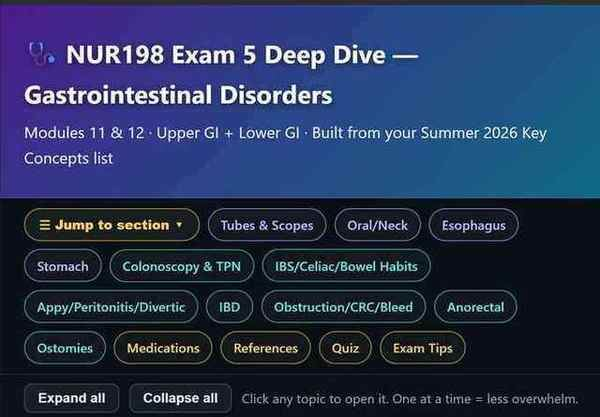

🎯 Final Exam Key Concepts Review sorted by deliverable
Your Key Concepts document says that for all disorders you are responsible for six things. The rest of this page is sorted by module; these six sections are sorted the other way, so you can take one lens and run it across everything — every pathophysiology, then every set of manifestations, and so on. Tap any topic name to jump to its card. Tick the box when that one lens is solid for that topic; it saves on this device.
🔬 Pathophysiology 80 topics
What is actually going wrong in the body, and why that produces this picture. If you can say the mechanism out loud, the signs stop needing memorising.
Module 1 · Older Adult, Chronic Illness & Disability
Module 2 · Fluid, Electrolyte & Acid–Base Balance
- procedure
- procedure
Module 3 · Perioperative, Pain & Integument
- procedure
- procedure
Modules 4–6 · Respiratory
- procedure
- procedure
- procedure
Modules 7–8 · Cardiovascular
Module 9 · Renal & Urinary
- procedure
Module 10 · Hepatobiliary
Module 11 · Upper GI Disorders
- procedure
- procedure
- procedure
- procedure
- procedure
Module 12 · Lower GI, Intestinal & Rectal Disorders
- procedure
- procedure
- procedure
Module 13 · Musculoskeletal Disorders & Trauma
- procedure
- procedure
- procedure
- procedure
🔎 Diagnostic Procedures / Tests 80 topics
What is ordered to find it or follow it — labs, imaging, scopes — plus what you do before and after, and the value that means trouble.
Module 1 · Older Adult, Chronic Illness & Disability
Module 2 · Fluid, Electrolyte & Acid–Base Balance
- procedure
- procedure
Module 3 · Perioperative, Pain & Integument
- procedure
- procedure
Modules 4–6 · Respiratory
- procedure
- procedure
- procedure
Modules 7–8 · Cardiovascular
Module 9 · Renal & Urinary
- procedure
Module 10 · Hepatobiliary
Module 11 · Upper GI Disorders
- procedure
- procedure
- procedure
- procedure
- procedure
Module 12 · Lower GI, Intestinal & Rectal Disorders
- procedure
- procedure
- procedure
Module 13 · Musculoskeletal Disorders & Trauma
- procedure
- procedure
- procedure
- procedure
🩺 Clinical Manifestations 80 topics
What you would see, hear and measure. Include the early sign and the late sign, because exams live on the difference.
Module 1 · Older Adult, Chronic Illness & Disability
Module 2 · Fluid, Electrolyte & Acid–Base Balance
- procedure
- procedure
Module 3 · Perioperative, Pain & Integument
- procedure
- procedure
Modules 4–6 · Respiratory
- procedure
- procedure
- procedure
Modules 7–8 · Cardiovascular
Module 9 · Renal & Urinary
- procedure
Module 10 · Hepatobiliary
Module 11 · Upper GI Disorders
- procedure
- procedure
- procedure
- procedure
- procedure
Module 12 · Lower GI, Intestinal & Rectal Disorders
- procedure
- procedure
- procedure
Module 13 · Musculoskeletal Disorders & Trauma
- procedure
- procedure
- procedure
- procedure
💊 Medical Management 80 topics
What the provider orders: drugs, procedures, surgery, diet. Not your job to prescribe it, very much your job to know it.
Module 1 · Older Adult, Chronic Illness & Disability
Module 2 · Fluid, Electrolyte & Acid–Base Balance
- procedure
- procedure
Module 3 · Perioperative, Pain & Integument
- procedure
- procedure
Modules 4–6 · Respiratory
- procedure
- procedure
- procedure
Modules 7–8 · Cardiovascular
Module 9 · Renal & Urinary
- procedure
Module 10 · Hepatobiliary
Module 11 · Upper GI Disorders
- procedure
- procedure
- procedure
- procedure
- procedure
Module 12 · Lower GI, Intestinal & Rectal Disorders
- procedure
- procedure
- procedure
Module 13 · Musculoskeletal Disorders & Trauma
- procedure
- procedure
- procedure
- procedure
⭐ Nursing Management & Priorities of Care 80 topics
Your actions, in order. When a question asks "which action first", this is the section it is testing.
Module 1 · Older Adult, Chronic Illness & Disability
Module 2 · Fluid, Electrolyte & Acid–Base Balance
- procedure
- procedure
Module 3 · Perioperative, Pain & Integument
- procedure
- procedure
Modules 4–6 · Respiratory
- procedure
- procedure
- procedure
Modules 7–8 · Cardiovascular
Module 9 · Renal & Urinary
- procedure
Module 10 · Hepatobiliary
Module 11 · Upper GI Disorders
- procedure
- procedure
- procedure
- procedure
- procedure
Module 12 · Lower GI, Intestinal & Rectal Disorders
- procedure
- procedure
- procedure
Module 13 · Musculoskeletal Disorders & Trauma
- procedure
- procedure
- procedure
- procedure
🗣️ Client Teaching / Education 80 topics
What the client goes home knowing. Diet, drug rules, warning signs, when to call.
Module 1 · Older Adult, Chronic Illness & Disability
Module 2 · Fluid, Electrolyte & Acid–Base Balance
- procedure
- procedure
Module 3 · Perioperative, Pain & Integument
- procedure
- procedure
Modules 4–6 · Respiratory
- procedure
- procedure
- procedure
Modules 7–8 · Cardiovascular
Module 9 · Renal & Urinary
- procedure
Module 10 · Hepatobiliary
Module 11 · Upper GI Disorders
- procedure
- procedure
- procedure
- procedure
- procedure
Module 12 · Lower GI, Intestinal & Rectal Disorders
- procedure
- procedure
- procedure
Module 13 · Musculoskeletal Disorders & Trauma
- procedure
- procedure
- procedure
- procedure
Module 1 · Older Adult, Chronic Illness & Disability Exam 1
Expected Physiological Changes of Aging ★ High-yield
Normal aging — by system
- Cardio: stiffer vessels → ↑systolic BP, slower HR response to stress, orthostatic hypotension (fall risk — rise slowly)
- Resp: ↓lung elasticity, weaker cough, ↓cilia → pneumonia & aspiration risk
- Renal: ↓GFR (drugs clear slower!), nocturia, ↓thirst sensation → dehydration risk
- GI: ↓motility (constipation), ↓saliva, ↓intrinsic factor → B12 deficiency
- Neuro: slower processing is normal — confusion is NEVER normal aging (work it up: infection? meds? hypoxia?)
- Skin/MSK: thin fragile skin, ↓subcut fat, ↓bone density, ↓muscle mass → falls, fractures, pressure injuries, hypothermia
- Senses: presbyopia, presbycusis (hear low tones better — speak low and slow, face the client), ↓taste/smell
Nursing management
- Fall prevention bundle: assess risk, clutter-free, adequate lighting, nonslip footwear, call light in reach
- Skin: reposition q2h, minimal tape, moisturize; med doses often lower ("start low, go slow")
Delirium vs Dementia ★ High-yield
| Delirium | Dementia | |
|---|---|---|
| Onset | Sudden (hours–days) | Gradual (months–years) |
| Course | Fluctuates through the day; worse at night | Slowly progressive; stable day to day |
| Attention | Impaired — hallmark | Intact early |
| Cause | Reversible: infection (UTI!), meds, dehydration, hypoxia, surgery/anesthesia | Irreversible brain changes (Alzheimer most common) |
| Treatment | Find and fix the cause | Support function, safety, routines |
Nursing care (both)
- Reorient calmly, consistent caregivers, clocks/calendars, glasses/hearing aids ON, day-night routine, family at bedside
- Avoid restraints and unnecessary sedatives (worsen both); safety = wandering precautions for dementia
Polypharmacy, Abuse & Ageism
Polypharmacy
- Multiple meds + multiple prescribers + ↓renal/hepatic clearance = adverse events; anticholinergics, sedatives, opioids = Beers-list caution (falls, confusion)
- Nursing: full med reconciliation every visit — include OTC + herbals; watch for a "prescribing cascade" (new drug to treat another drug's side effect)
Elder abuse
- Types: physical, emotional, sexual, financial, neglect (most common); abuser is usually a known caregiver
- Red flags: injuries inconsistent with story, delays seeking care, poor hygiene/dehydration, caregiver answers all questions, fear of caregiver
- Nurses are mandatory reporters — interview the client alone; report suspicion (you don't have to prove it)
Ageism
- Stereotyping by age → undertreated pain, dismissed symptoms. Assess the person, not the birth year.
Chronic Illness & Disability Management
- Chronic = lasts ≥3 months (usually lifelong), fluctuates through remissions/exacerbations; goal = manage, not cure — maximize function and quality of life
- Trajectory phases: onset → stable → unstable → acute flare → comeback → downward → dying; nursing focus shifts by phase
- Self-management support = the core: teach-back method, simplify regimens, address cost/access barriers, involve family/caregivers
- Watch caregiver strain; connect to community resources; depression and social isolation are common — screen for both
Module 2 · Fluid, Electrolyte & Acid–Base Balance Exam 1
More Fluid & Electrolyte graphics 1 graphics
Fluid Volume: Hypovolemia vs Hypervolemia ★ High-yield
| Hypovolemia (deficit) | Hypervolemia (overload) | |
|---|---|---|
| Causes | Vomiting, diarrhea, hemorrhage, diuretics, burns, poor intake | Heart failure, renal failure, excess IV fluids/Na⁺, cirrhosis |
| S/S | ↑HR, ↓BP, orthostatic, ↑ urine specific gravity, dry mucosa, ↓skin turgor, ↓UOP, weight loss | Bounding pulse, ↑BP, JVD, crackles, edema, dyspnea, weight gain |
| Priority | Isotonic fluids (NS/LR), safety (falls), monitor UOP | Restrict Na⁺/fluid, diuretics, daily weight, semi-Fowler, O₂ |
Potassium (3.5–5.0) — Hypo vs Hyper ★ High-yield
| Hypokalemia <3.5 | Hyperkalemia >5.0 | |
|---|---|---|
| Causes | Diuretics, vomiting/diarrhea, NG suction, insulin | Renal failure, K⁺-sparing diuretics, ACE inhibitors, tissue damage, acidosis |
| S/S | Muscle weakness/cramps, ↓reflexes, flat T waves, U waves, ileus, arrhythmias | Muscle weakness, peaked T waves, wide QRS, bradycardia → arrest |
| Nursing | Replace K⁺ (NEVER IV push — always diluted/pump, max ~10 mEq/hr; give oral with food); cardiac monitor | Restrict K⁺; kayexalate; IV calcium gluconate (protects heart); insulin+D50, albuterol shift K⁺ in; dialysis |
Sodium (135–145) — Hypo vs Hyper
- Hyponatremia <135: neuro (confusion, seizures, headache) from cell swelling. Causes: SIADH, excess water, diuretics. Tx: fluid restriction; hypertonic (3%) saline only for severe — correct SLOWLY (rapid = osmotic demyelination)
- Hypernatremia >145: thirst, dry mucosa, restless→lethargy, seizures. Causes: dehydration, ↓water intake, DI. Tx: hypotonic fluids/water, correct slowly (rapid = cerebral edema)
Calcium (9–10.5) & Magnesium (1.3–2.1)
- Hypocalcemia: ↑neuromuscular excitability — +Trousseau (BP cuff→hand spasm), +Chvostek (cheek tap→twitch), tetany, laryngospasm, seizures. Causes: thyroid/parathyroid surgery, renal failure. Tx: IV calcium gluconate
- Hypercalcemia: "moans, groans, stones, bones" — weakness, ↓reflexes, kidney stones, constipation. Causes: hyperparathyroid, cancer, immobility. Tx: hydrate, ambulate, bisphosphonates
- Calcium and phosphorus are inverse; calcium and magnesium act the same direction clinically
- Hypomagnesemia: like hypocalcemia (tremor, +Chvostek/Trousseau, torsades). Hypermagnesemia: ↓reflexes, ↓BP, resp depression (classic in preeclampsia Mg therapy → antidote calcium gluconate)
Acid–Base / ABG Interpretation ★ High-yield
Normals
- pH 7.35–7.45 · PaCO₂ 35–45 (respiratory) · HCO₃ 22–26 (metabolic)
ROME shortcut
- Respiratory Opposite: pH & CO₂ move opposite ways
- Metabolic Equal: pH & HCO₃ move the same way
| Disorder | pH | Cause examples |
|---|---|---|
| Resp acidosis | ↓ (↑CO₂) | Hypoventilation, COPD, opioid overdose, OSA |
| Resp alkalosis | ↑ (↓CO₂) | Hyperventilation, anxiety, pain, early sepsis |
| Metabolic acidosis | ↓ (↓HCO₃) | DKA, renal failure, diarrhea, lactic acidosis |
| Metabolic alkalosis | ↑ (↑HCO₃) | Vomiting, NG suction, antacids, diuretics |
IV Fluid Therapy + I&O / Rate Math Procedure
- Isotonic (NS 0.9%, LR): stays in vessels → fluid resuscitation, blood loss (LR not with blood; NS is)
- Hypotonic (0.45% NS): shifts INTO cells → cellular dehydration/hypernatremia (watch cerebral edema)
- Hypertonic (3% NS, D10): pulls fluid OUT of cells → severe hyponatremia, cerebral edema; ICU, slow, monitor closely
The two calculations they test
- IV rate (mL/hr) = total volume ÷ hours. Drip (gtt/min) = (volume × drop factor) ÷ minutes.
- I&O: count all fluids in (PO, IV, tube) and out (urine, emesis, drains, liquid stool). 1 oz = 30 mL; goal urine ≥ 30 mL/hr.
Module 3 · Perioperative, Pain & Integument Exam 1
Perioperative Nursing ★ High-yield
Pre-op
- Informed consent: provider explains risks/benefits; nurse witnesses the signature & confirms understanding. Must be signed BEFORE sedation.
- NPO (usually after midnight/8 hr), hold/adjust meds (anticoagulants, insulin, some herbals), baseline vitals/labs, remove jewelry/dentures, teach coughing/IS/leg exercises, mark site, verify allergies
Intra-op
- Time-out (right patient/site/procedure), sterile field, positioning injury & skin protection, counts (sponges/instruments)
Post-op priorities (PACU → floor)
- Airway → breathing → circulation first. Then LOC, pain, surgical site/drains, N/V
- Prevent complications: IS + early ambulation (atelectasis/pneumonia, VTE), splint incision, monitor for hemorrhage (↑HR early), infection, paralytic ileus (bowel sounds/flatus)
- Dehiscence/evisceration: cover with sterile saline-soaked gauze, low-Fowler with knees bent, NPO, stay calm, call surgeon
Malignant Hyperthermia & Anesthesia Emergency
- Rare genetic reaction to inhaled anesthetics + succinylcholine → uncontrolled muscle hypermetabolism
- Earliest sign = ↑ end-tidal CO₂; earliest reliable clinical = masseter (jaw) rigidity, tachycardia. Hyperthermia is a LATE sign.
- Antidote = dantrolene; stop the agent, 100% O₂, cool the client, treat hyperkalemia/arrhythmias
- Anesthesia types: general (airway priority), regional/spinal (watch hypotension, high block → resp compromise), local, moderate sedation
Obesity & Bariatric Surgery
- Qualify: BMI ≥40, or ≥35 with comorbidities, after failed conservative attempts
- Post-op: small sips → tiny frequent meals, protein first, no gulping, no straws/carbonation; risk of anastomotic leak (tachycardia, fever, ↑ pain → report), VTE, dumping syndrome
- Lifelong vitamin/mineral supplementation (B12, iron, Ca, D); airway/OSA precautions; bariatric-appropriate equipment + dignity
Pain Management ★ High-yield
- Pain is what the client says it is — self-report is the gold standard. Use FLACC (nonverbal/kids), Wong-Baker faces, 0–10 numeric; PAINAD for dementia
- WHO ladder: non-opioids (acetaminophen — watch 4 g/day max, NSAIDs — GI/renal/bleeding) → weak → strong opioids; multimodal is best
- Opioids: monitor sedation + RR FIRST (respiratory depression is the danger); naloxone reverses; prevent constipation proactively (stimulant laxative, not just fiber)
- Non-pharm: heat/cold, positioning, distraction, massage, relaxation, TENS — adjuncts, not replacements
Integument: Dermatitis, Zoster, Psoriasis, Skin Cancer
- Atopic dermatitis (eczema): dry itchy inflamed skin; moisturize, avoid triggers, topical steroids, don't scratch
- Herpes zoster (shingles): reactivated varicella along a dermatome (unilateral, doesn't cross midline), painful vesicles. Airborne + contact precautions if disseminated/immunocompromised; antivirals within 72 hr; risk of postherpetic neuralgia. Contagious to non-immune until crusted.
- Psoriasis: silvery scaly plaques (autoimmune, ↑ cell turnover); topical steroids, vitamin D analogs, phototherapy, biologics; not contagious
- Skin cancers — ABCDE for melanoma: Asymmetry, Border irregular, Color varied, Diameter >6 mm, Evolving. AK = precancerous; BCC = most common, rarely metastasizes; SCC can metastasize; melanoma = deadliest. Teach sun protection + monthly skin checks
- Skin grafts/flaps: monitor color/temp/cap refill of graft, immobilize, prevent pressure/shear on site
Modules 4–6 · Respiratory Exam 2
🎬 Chest Tubes — NCLEX Simplified video
More Respiratory graphics 19 graphics
Respiratory Diagnostics Procedure
- ABGs (oxygenation + acid-base), PFTs (FVC/FEV1 — obstructive vs restrictive), CXR, chest CT/MRI, sputum culture (early AM, before antibiotics), pulse ox
- Bronchoscopy/thoracoscopy: NPO before; after → check gag reflex before PO, watch for bleeding/laryngospasm (like EGD airway rules)
- Thoracentesis: upright leaning on table, hold still; after → watch for pneumothorax (↓/absent breath sounds, ↑RR, sudden dyspnea)
Upper Respiratory: Rhinitis, Sinusitis, Pharyngitis, OSA, Epistaxis
- Rhinitis/sinusitis/pharyngitis: mostly viral (supportive care); teach hand hygiene, hydration; antibiotics only if bacterial (strep throat)
- OSA: repeated apnea in sleep → daytime somnolence, loud snoring, morning headache, HTN. Tx = CPAP (adherence teaching is key), weight loss, avoid alcohol/sedatives, side-sleeping
- Epistaxis: sit up + lean FORWARD, pinch soft nose 10–15 min, ice; don't tilt head back (aspiration/swallowed blood)
- Laryngeal cancer: hoarseness >2 wk = red flag; smoking/alcohol; may need laryngectomy → permanent stoma, communication plan
Tracheostomy & O₂ Delivery Procedure
- O₂ systems (low→high): nasal cannula (1–6 L, 24–44%) → simple mask → Venturi (most precise %) → non-rebreather (60–100%, emergencies)
- Trach suctioning: hyperoxygenate first, sterile technique, insert WITHOUT suction, apply suction on withdrawal, ≤10–15 sec, ≤3 passes; watch SpO₂/HR
- Keep obturator + spare trach + O₂ at bedside; if tube dislodges <7 days post-op = emergency (tract not formed) → call for help, ventilate
Pneumonia, Atelectasis, TB
- Pneumonia: fever, productive cough, crackles, ↑WBC, dyspnea, ↓SpO₂. Tx: antibiotics (bacterial), O₂, hydration, IS, position good lung down for oxygenation... affected lung up; prevention = IS, ambulation, vaccines
- Atelectasis: collapsed alveoli (common post-op) → ↓breath sounds; prevent/treat with IS, deep breathing, ambulation, coughing
- TB: airborne precautions, negative-pressure room, N95; positive s/s = night sweats, weight loss, hemoptysis, chronic cough; dx = sputum AFB × 3 (confirms), Mantoux/IGRA screens; RIPE meds for 6–9 months — teach adherence (rifampin turns secretions orange), report vision changes (ethambutol), no alcohol (isoniazid hepatotoxicity)
Chest Tubes & Drainage Systems Procedure ★ High-yield
- Purpose: remove air (pneumothorax — apical tube) or fluid/blood (hemothorax/effusion — basal tube) to re-expand the lung
- Water-seal chamber: tidaling (rises/falls with breathing) = normal; continuous bubbling = air leak (check connections/insertion site first)
- Suction chamber: gentle continuous bubbling is expected there
- Keep drainage system below chest level, upright; do NOT routinely clamp or strip; keep sterile occlusive dressing
- If tube dislodges from CHEST: cover with sterile gauze taped on 3 sides (flutter valve). If disconnects from SYSTEM: put the end in sterile water. Report sudden ↑ bright red drainage (>100 mL/hr).
ARDS, Pneumothorax, Pulmonary Edema, Mechanical Ventilation Emergency
- Pneumothorax: sudden pleuritic pain, dyspnea, ↓/absent breath sounds one side; tension pneumo = tracheal deviation AWAY, hypotension, distended neck veins → needle decompression EMERGENCY
- Flail chest: paradoxical chest movement after multiple rib fractures → support ventilation
- ARDS: refractory hypoxemia (doesn't improve with O₂), bilateral infiltrates, ↓compliance; needs mechanical vent + PEEP, low tidal volume, prone positioning
- Pulmonary edema: pink frothy sputum, severe dyspnea, crackles → high Fowler, O₂, diuretics, morphine, treat cause (often left HF)
- Ventilator alarms: HIGH pressure = obstruction (secretions/kink/biting/coughing); LOW pressure = disconnection/leak
Carbon Monoxide Poisoning Emergency ⭐ High-yield
Why it does this
- CO binds hemoglobin with 200–250× the affinity of oxygen, so it takes the seats oxygen needs.
- It also shifts the oxyhemoglobin dissociation curve LEFT — the little oxygen still bound is not released to the tissues.
- It poisons cytochrome c oxidase in mitochondria, so cells cannot use oxygen even when it arrives. This is why symptoms outlast the blood level.
- Heart and brain suffer first — they have the least reserve.
Recognising it
- Looks like flu, but no fever. Headache is the most common symptom.
- Everyone in the house is sick at once, pets included, and everyone improves after leaving the building.
- Winter, generators, a car running in a garage, a faulty furnace, using an oven to heat a room.
- “Cherry red” skin is the textbook sign but is late and unreliable — mostly a postmortem finding. Pallor and cyanosis are far more common. Do not wait for it.
- COHb over ~3–4% in a nonsmoker, or over ~9–10% in a smoker, supports the diagnosis.
What you do — in order
- 1. Get them out of the source and into fresh air. Nothing else works until this happens.
- 2. 100% oxygen by non-rebreather at 15 L/min. Intubate and ventilate on 100% FiO₂ if obtunded or unstable.
- 3. Continuous cardiac monitoring, ECG and troponin — myocardial injury is common. Check lactate and CK.
- 4. Keep oxygen going until symptom-free and COHb is near normal, usually about 4–6 hours — judged by symptoms and serial COHb, not by SpO₂.
- 5. Hyperbaric oxygen for severe poisoning: loss of consciousness, neuro deficit or altered mental status, cardiac ischemia, severe metabolic acidosis, COHb above ~25%, or pregnancy at a lower threshold. Best within the first 6 hours.
| Half-life of carboxyhemoglobin | Roughly |
|---|---|
| Room air | 4–5 hours |
| 100% oxygen, non-rebreather | 60–90 minutes |
| Hyperbaric oxygen | 20–30 minutes |
Delayed neurologic sequelae
- Appears days to weeks after apparent recovery, typically 2–4 weeks, after a lucid interval.
- Memory loss, cognitive and personality change, gait disturbance, psychosis.
- Up to 40% after severe poisoning. These clients need neuropsychiatric follow-up — tell them to expect it.
Client teaching
- CO detectors on every level and near sleeping areas; test them and change the batteries.
- Never run a generator, grill, or vehicle in a garage or enclosed space — not even with the door open.
- Have the furnace and chimney inspected every year. Never heat the house with the oven.
- CO is colorless, odorless and tasteless. You cannot smell it. That is the whole problem.
- Leave the building and call 911; do not go back in until the fire department clears it.
- Poison Control: 1-800-222-1222.
Pulmonary Embolism 🚨 Emergency ⭐ High-yield
🧮 Why it happens — Virchow's triad
| Leg of the triad | Who that is on your unit |
|---|---|
| Venous stasis | Immobility, bed rest, long surgery, long flight, casts, obesity, heart failure |
| Vessel injury | Surgery (especially orthopedic hip and knee), trauma, fractures, central lines, IV drug use |
| Hypercoagulability | Cancer, pregnancy and postpartum, estrogen contraceptives — worse with smoking, dehydration, sepsis, inherited clotting disorders, COVID |
👀 What you would see
- Sudden dyspnea — the most common symptom, about 73%.
- Tachypnea — the most common sign, about 54%.
- Tachycardia is classic but only present in about a quarter. A normal heart rate does not argue against PE. This is where students lose the question.
- Pleuritic chest pain — sharp, stabbing, worse on inspiration.
- Anxiety and a sense of impending doom. Take it seriously; it is a real finding, not nerves.
- Falling SpO₂, cough, crackles, sometimes hemoptysis, low-grade fever, a pleural friction rub.
- Massive PE: hypotension, JVD, syncope, cyanosis, right-sided heart strain → obstructive shock and cardiac arrest. This is the one that kills within the hour.
- Check the legs — unilateral calf swelling, warmth, redness and pain point to the source DVT. But most PEs arrive with no leg symptoms at all, so normal legs rule nothing out.
🧪 Diagnostics
| Test | What it tells you |
|---|---|
| CT pulmonary angiography (CTPA) | The gold standard — this is the confirming test. Uses IV contrast. The history that matters is a previous reaction to iodinated contrast — shellfish allergy is NOT a risk factor, that one is a myth with no cross-reactivity behind it. Check creatinine/eGFR and BUN and hydrate. Metformin is held only for eGFR under 30, AKI, or arterial contrast — not routinely |
| D-dimer | Very sensitive, not specific. A normal D-dimer in a low- or intermediate-risk ("PE unlikely") client excludes PE without imaging. In a high-probability client a normal D-dimer does not rule it out — go straight to CT. A high one proves nothing; surgery, trauma, pregnancy, cancer, age and infection all raise it |
| V/Q scan | The alternative when contrast is a problem — renal impairment, contrast allergy, pregnancy |
| ABG | Classic early picture: respiratory alkalosis with hypoxemia — low PaO₂ and low PaCO₂, because they are blowing off CO₂ from tachypnea. Late, as they tire, it flips to respiratory acidosis. But about a third of PE clients have a normal PaO₂ — a normal ABG or SpO₂ never rules PE out |
| ECG | Sinus tachycardia is the most common finding. The classic S1Q3T3 pattern is famous but uncommon — know the name, do not wait for it |
| Chest x-ray | Abnormal in most PEs, but never diagnostic — only about 12% are truly normal. The usual findings are nonspecific: atelectasis, a small effusion, a raised hemidiaphragm. Its job is to rule out the other causes of sudden dyspnea — pneumothorax, pneumonia, pulmonary edema — not to find the PE |
| Echocardiogram, troponin, BNP | Right ventricular strain — these are what sort a stable PE from a life-threatening one |
| Wells score | Pre-test probability; it decides whether you go to D-dimer or straight to CT |
1. Stay with the client. Do not leave to go find someone — call out or use the call light.
2. Oxygen and position together — high-flow O₂, non-rebreather if needed, sitting upright in high Fowler's. If they are hypotensive, keep them flatter — upright strips preload from the failing right ventricle.
3. Call the provider / rapid response.
4. IV access, continuous cardiac and pulse-ox monitoring, vitals.
5. Anticoagulation as ordered — often started on strong suspicion, before the CT confirms it.
Airway and Breathing first. Positioning and oxygen are both “B” and go together — but if a question forces you to pick one, pick the oxygenation answer.
💊 Anticoagulation — the numbers they ask for
| Drug | Monitor | Antidote |
|---|---|---|
| Heparin (unfractionated, IV drip) | aPTT 1.5–2.5× control — the number your texts and NCLEX use; many real labs now run anti-Xa 0.3–0.7 instead. Baseline and serial platelets for HIT: a fall of more than 50% from baseline or below 150,000, classically days 5–10. HIT causes CLOTTING, not bleeding. Stop all heparin including line flushes AND start a non-heparin anticoagulant — argatroban, bivalirudin or fondaparinux. Do not transfuse platelets. Protamine does NOT treat HIT. | Protamine sulfate — for bleeding or overdose only |
| Enoxaparin (Lovenox, LMWH) | No routine aPTT; dose-adjust for CrCl under 30. Deep subcut in the abdomen, do not expel the air bubble, do not aspirate, do not rub. Boxed warning — spinal/epidural hematoma with neuraxial anesthesia or lumbar puncture: report new back pain, leg weakness or numbness, or bowel and bladder changes | Protamine — partial only, about 60% of anti-Xa activity |
| Warfarin | INR 2–3. Takes days to work, so heparin overlaps for a minimum of 5 days AND until the INR is 2 or above for 24 hours | Vitamin K (phytonadione) — slow; major bleeding needs 4-factor PCC |
| DOACs — apixaban, rivaroxaban | Now first-line for most VTE, preferred over warfarin. No routine monitoring, fewer interactions; still check renal function. Contraindicated in pregnancy | Andexanet alfa |
| Dabigatran | No routine monitoring | Idarucizumab |
🏥 Beyond anticoagulation
- Thrombolytics (alteplase) — only for massive PE with hemodynamic instability. They dissolve the clot that is already there. Absolute contraindications: active internal bleeding or a bleeding disorder; any prior intracranial hemorrhage; ischemic stroke within 3 months; known intracranial AVM or malignant tumour; intracranial or spinal surgery or serious head trauma within 3 months; suspected aortic dissection; severe uncontrolled hypertension.
- Surgical or catheter embolectomy when thrombolytics fail or are contraindicated.
- IVC filter when anticoagulation cannot be used or keeps failing — it catches clots travelling up from the legs. It does not treat the clot already in the lung.
🛡 Prevention — the highest-yield nursing content in this card
- Early and frequent ambulation. This is the answer far more often than any drug.
- Sequential compression devices and graduated stockings; on whenever they are in bed.
- Prophylactic subcut heparin or enoxaparin for at-risk clients.
- Ankle pumps, leg exercises, hydration, no pillows under the knees, no leg crossing.
- Highest-risk groups: hip and knee replacement, major abdominal or pelvic surgery, cancer, trauma.
🏷 Bleeding precautions and teaching
- Electric razor, soft toothbrush, no hard flossing, no contact sports, fall precautions.
- Report bleeding gums, nosebleeds, bruising, blood in urine or stool, black tarry stools, coffee-ground emesis, and any new or worsening headache — that last one may be an intracranial bleed.
- No NSAIDs, no aspirin unless prescribed. Check every over-the-counter product and supplement.
- Warfarin and vitamin K: the rule is consistency, not avoidance. She does not have to give up spinach — she has to eat about the same amount of it every week.
- Medical alert bracelet, keep every INR appointment, tell every dentist and provider.
- Warfarin and the DOACs are contraindicated in pregnancy. Warfarin is teratogenic; heparin and LMWH are the pregnancy-safe options because they do not cross the placenta.
🔄 The other three embolisms — each has a different first action
| Type | Who and when | The clue | First action |
|---|---|---|---|
| Fat embolism | Long bone or pelvic fracture, usually 24–72 hours after the injury; often a young adult | Petechiae over the chest, axillae, neck and conjunctivae, plus confusion out of proportion to everything else. Present in only about a third to half of cases and often late — do not wait for it | Oxygen and supportive care — that is the whole treatment. Early surgical fixation of the fracture is what prevents it; splint and immobilise until then. Anticoagulation is not the treatment |
| Air embolism | Central line insertion, removal or disconnection; also surgery and dialysis | Sudden dyspnea and hypotension with the classic churning mill-wheel murmur — know the name, but it is late and insensitive; most air emboli never produce it | Clamp the line and stop the infusion, then left side-lying with the head down (Trendelenburg — Durant's maneuver) to trap the air in the right atrium, and give 100% oxygen. This applies to venous air embolism |
| Amniotic fluid embolism | Labour, delivery, or immediately postpartum | Abrupt collapse: respiratory distress, cardiovascular collapse, then DIC | Call for help, CPR-level support, oxygen, deliver the fetus, treat the DIC |
Cystic Fibrosis ⭐ High-yield
Pathophysiology
- Autosomal recessive, CFTR gene on chromosome 7. Most common mutation is F508del. Two carrier parents = 25% chance each pregnancy.
- Chloride is stuck inside the cell → water is not pulled into the secretion → mucus is thick.
- Sweat glands work backwards: chloride cannot be reabsorbed out of sweat, so the sweat comes out salty. That is the whole basis of the sweat test.
- Lungs: thick mucus plugs airways → trapped bacteria → chronic infection → inflammation → bronchiectasis → respiratory failure. This is what they die of.
- Pancreas: ducts plug → enzymes never reach the duodenum → fat and protein are not absorbed. Over time the gland fibroses and fills with fat, wrecking the islets → insulin insufficiency → CF-related diabetes (CFRD). It is not type 1 (not autoimmune) and not type 2. Screen annually with a 2-hour OGTT starting at age 10 — A1C is not used to screen. Treat with insulin, not oral agents, and do not put them on a diabetic or low-calorie diet — the CF high-calorie, high-fat diet still wins.
What you would see
- Salty-tasting skin — the parent says the baby tastes salty when kissed. Classic.
- Chronic productive cough, thick purulent sputum, recurrent pneumonia, wheezes and crackles.
- Steatorrhea — bulky, greasy, foul-smelling, floating stools.
- Failure to thrive despite a big appetite. They eat and eat and stay small.
- Meconium ileus in the newborn — occurs in about 15–20% and is nearly diagnostic of CF, but most babies are now found by newborn screening rather than by symptoms. Later, distal intestinal obstruction syndrome (DIOS) and rectal prolapse.
- Barrel chest, clubbing, nasal polyps, chronic sinusitis.
- 97–98% of men are infertile — congenital bilateral absence of the vas deferens. Infertile is not sterile: sperm production is normal in about 90%, so they can father children with surgical sperm retrieval and IVF. Women have reduced fertility from thick cervical mucus but can conceive — they still need contraception counselling.
Diagnostics
| Test | What it shows |
|---|---|
| Sweat chloride — the gold standard | 60 mmol/L or higher = diagnostic · 30–59 intermediate, repeat and do genetic testing · 29 or below normal. Same values at every age. Not valid in the first 48 hours of life; done at 10 days or older with an adequate sweat volume. |
| Newborn screening | Immunoreactive trypsinogen (IRT), then sweat test to confirm |
| CFTR genetic testing | Confirms, and decides which modulator drug they can have |
| Stool elastase / 72-hour fecal fat | Low elastase, high fecal fat = pancreatic insufficiency |
| Pulmonary function tests | Obstructive pattern; FEV₁ is how progression is tracked |
| Sputum culture | Staph aureus early, then Pseudomonas aeruginosa, and Burkholderia cepacia — the one that spreads between clients |
1. Bronchodilator — open the airway first. It also blunts the bronchospasm hypertonic saline causes.
2. Hypertonic saline 7% and/or dornase alfa (Pulmozyme) — now thin the mucus.
3. Airway clearance — chest physiotherapy, the vest, PEP device, huff cough. Now get it out.
4. Inhaled antibiotic — so it reaches a clear airway instead of sitting on mucus.
5. Inhaled corticosteroid if ordered — dead last, into the clearest lung.
Answer with that order. The real-world nuance, if it ever comes up: the Cochrane review found dornase alfa works about as well given after airway clearance as before, so its timing is flexible in practice. And never mix inhaled tobramycin with dornase alfa in the same nebulizer.
Medical management
- Dornase alfa breaks down the DNA released by dead white cells, which is what makes CF mucus so thick. Hypertonic saline 7% pulls water into the airway.
- Inhaled tobramycin (300 mg BID, 28 days on / 28 days off) or aztreonam for chronic Pseudomonas. Monitor for ototoxicity (tinnitus, hearing loss), nephrotoxicity and bronchospasm.
- CFTR modulators — ivacaftor, tezacaftor/ivacaftor, elexacaftor/tezacaftor/ivacaftor (Trikafta). These fix the protein itself rather than the symptoms, and they are chosen by mutation. Boxed warning: drug-induced liver injury. LFTs at baseline, monthly for 6 months, then every 3 months for a year, then annually — hold and report jaundice, right upper quadrant pain, nausea and vomiting. Also eye exams in children (cataracts), watch for new depression or suicidal ideation, give with fat-containing food, and avoid grapefruit.
- Pancreatic enzymes (pancrelipase) and fat-soluble vitamins A, D, E and K.
- No cough suppressants. The productive cough is how they clear the mucus — suppressing it is a classic wrong answer.
- Lung transplant for end-stage disease.
Nursing management
- Airway clearance before meals, or at least 1 hour after — doing it on a full stomach makes them vomit.
- Enzyme capsules may be opened onto a small amount of acidic soft food. The label rule is pH 4.5 or less — applesauce, bananas, pears. Do not crush or chew the beads; the coating protects the enzyme from stomach acid, and chewed beads irritate the mouth. Do not mix into milk, formula or breast milk — the pH is too high and it strips the coating. Give it immediately, then follow with fluid so none is left in the mouth.
- High-calorie, high-protein, high-fat diet — roughly 110–200% of normal calories. Do not put them on a low-fat diet; fat is fine once enzymes are on board.
- Extra salt, never restricted — they lose it in sweat. More in heat, fever and exercise.
- Watch for hemoptysis and pneumothorax — both are real risks in advanced disease.
- DIOS is not plain constipation. Right lower quadrant mass with obstruction → osmotic laxatives, polyethylene glycol or Gastrografin. Surgery is not the first move.
- ABPA (allergic bronchopulmonary aspergillosis): new wheezing, a drop in FEV₁ and a rising IgE that does not respond to antibiotics. Treated with corticosteroids plus an antifungal.
- Also chronic: osteopenia and osteoporosis (vitamin D malabsorption plus steroids) and CF liver disease (focal biliary cirrhosis, portal hypertension).
- Influenza, pneumococcal, COVID-19 and RSV immunization per schedule. Live vaccines are fine — CF itself does not make them immunosuppressed — unless they have had a transplant.
- Exercise is treatment, not just recreation — it helps clear secretions.
Teaching the family
- It is lifelong and progressive, but the numbers have changed enormously. Per the CF Foundation Patient Registry, a child born today has a median predicted survival in the mid-60s, and most people with CF in the US are now adults. Adherence genuinely moves that number.
- Airway clearance every day, even when they feel well. It is not a rescue treatment.
- Report a change in sputum colour, volume or thickness, new fever, weight loss, or a drop in exercise tolerance — those are the early signs of an exacerbation.
- Genetic counselling for the parents and for the client of childbearing age.
- Salty skin is expected; extra salt in hot weather is a safety issue, not a preference.
COPD, Asthma, Lung Cancer ★ High-yield
- COPD: chronic bronchitis + emphysema; barrel chest, prolonged expiration, ↑CO₂ retention. Low-flow O₂ titrated to SpO₂ 88–92%; pursed-lip & diaphragmatic breathing, tripod position, small frequent high-cal meals, smoking cessation #1, vaccines
- Asthma: reversible bronchospasm; wheeze, chest tightness, cough. SABA (albuterol) = rescue FIRST, then inhaled corticosteroid = controller (rinse mouth after — thrush). Silent chest / no wheezing in severe attack = ominous (no air moving). Peak flow monitoring: green/yellow/red zones
- Lung cancer: chronic cough, hemoptysis, weight loss; smoking = #1 risk; often late dx; management by stage (surgery/chemo/radiation) + symptom control
- Pulmonary embolism: sudden dyspnea, pleuritic chest pain, tachycardia, ↓SpO₂, anxiety. Full PE card is just above ↑
Modules 7–8 · Cardiovascular Exam 3
More Cardiovascular graphics 2 graphics
CAD, Angina & Acute Coronary Syndrome / MI ★ High-yield
- Stable angina: predictable, with exertion, relieved by rest + nitro. Unstable angina/MI: at rest, NOT relieved → emergency
- MI signs: crushing substernal pain radiating to jaw/left arm, diaphoresis, N/V, dyspnea, doom; women/elderly/diabetics = atypical (fatigue, indigestion, SOB)
- Immediate care (MONA-ish, not strict order): O₂ if <90%, aspirin (chew), nitroglycerin (hold if SBP<90 or PDE-5 inhibitor use), morphine; get 12-lead + troponin (most specific marker, rises 3–4 hr)
- Nitro teaching: 1 tab q5min ×3, call 911 if no relief after first dose; burning/headache expected; sit down (hypotension)
- Reperfusion: PCI (goal door-to-balloon <90 min) or thrombolytics; post-cath watch site bleeding, keep leg straight, pulses distal
Dysrhythmias, ECG, Defibrillation vs Cardioversion ★ High-yield
⚡ ECG & Arrhythmia Quick Guide — read it, recognize it, treat it
| Rhythm | What to recognize | What to do / teaching |
|---|---|---|
| ECG basics | P = atrial depolarization · QRS = ventricular depolarization · T = repolarization | Assess regularity + rate + P:QRS relationship first — foundation for every rhythm. |
| A-fib | Irregularly irregular, no clear P waves, fibrillatory baseline | Rate control (beta-blocker / CCB / digoxin) + anticoagulation (clot & stroke risk). |
| V-tach (with pulse) | Wide, regular “sawtooth” complexes, pulse present | Antiarrhythmics ± synchronized cardioversion. Pulseless V-tach or V-fib → defibrillate (unsynchronized) + CPR. |
| Asystole / PEA | Flat line (asystole) or organized rhythm with no pulse (PEA) | NOT shockable → CPR + epinephrine. |
| Bradycardia (symptomatic) | Slow rate with symptoms (dizziness, hypotension, syncope) | Atropine → pacing. Pacemaker/AICD teaching: check pulse, avoid strong magnets/MRI, don’t raise arm above shoulder initially, report dizziness. |
V-fib & pulseless V-tach
→ Defibrillate (unsynchronized) + CPR
Asystole & PEA
→ CPR + epinephrine
- ECG basics: P wave = atrial depolarization, QRS = ventricular depolarization, T = repolarization; regularity + rate + P:QRS
- A-fib: irregularly irregular, no clear P waves → clot/stroke risk → anticoagulation; rate control (beta-blocker/CCB/digoxin)
- V-tach WITH pulse: antiarrhythmics ± synchronized cardioversion. V-tach without pulse / V-fib: DEFIBRILLATE (unsynchronized) + CPR
- Asystole/PEA: NOT shockable → CPR + epinephrine
- Bradycardia (symptomatic): atropine → pacing. Pacemaker/AICD teaching: check pulse, avoid strong magnets/MRI, no arm raised above shoulder initially, report dizziness
Hypertension ★ High-yield
- "Silent killer"; ≥130/80 (stage 1). Damages heart, brain, kidneys, eyes. Lifestyle first: DASH diet, ↓Na⁺, weight loss, exercise, limit alcohol, no smoking
- Drug classes (see your antihypertensive chart): ACE inhibitors (-pril: dry cough, hyperkalemia, angioedema), ARBs (-sartan), beta-blockers (-olol: check HR/BP first, mask hypoglycemia), CCBs (-dipine), diuretics (give AM, monitor K⁺)
- Teaching: take even when feeling fine, don't stop abruptly (rebound), rise slowly (orthostatic), home BP log
Heart Failure & Pulmonary Edema ★ High-yield
| Left HF | Right HF |
|---|---|
| Backs up into LUNGS: dyspnea, orthopnea, crackles, pink frothy sputum, fatigue | Backs up into BODY: JVD, peripheral edema, weight gain, hepatomegaly, ascites |
- Management: daily weight (report 2–3 lb/day or 5 lb/week gain), Na⁺/fluid restriction, diuretics, ACE/ARB, beta-blocker, high Fowler + O₂ for dyspnea
- Digoxin: ↑contractility, ↓HR. Hold if apical HR <60; toxicity = N/V, anorexia, visual halos/yellow-green, confusion; hypokalemia ↑ toxicity risk; therapeutic 0.5–2
Valve Disorders, Cardiomyopathy, Infectious Cardiac
- Valve disorders (stenosis/regurgitation): murmurs, fatigue, HF symptoms; may need valve replacement (mechanical = lifelong anticoagulation)
- Pericarditis: sharp pleuritic chest pain relieved by sitting/leaning forward, friction rub; watch for cardiac tamponade (Beck triad: ↓BP, muffled heart sounds, JVD → emergency pericardiocentesis)
- Endocarditis: fever, new murmur, Janeway lesions/Osler nodes, splinter hemorrhages; needs long-term IV antibiotics, prophylaxis before dental work
- Myocarditis/cardiomyopathy: impaired pump → HF/arrhythmia; supportive, may progress to transplant
Peripheral Vascular: PAD vs PVD, DVT, Aneurysm, Raynaud ★ High-yield
| PAD (arterial) | PVD (venous) | |
|---|---|---|
| Problem | ↓ blood TO tissue | ↓ blood return FROM tissue |
| Pain | Intermittent claudication, pain with activity, rest pain worse at night | Aching/heavy, better with elevation |
| Skin | Cool, pale, hairless, shiny; weak pulses; round "punched-out" painful ulcers on toes/feet | Warm, brown discoloration, edema; irregular ulcers near ankle |
| Position | Dangle legs (dependent) to ↑ arterial flow | Elevate legs to ↑ venous return |
- DVT: unilateral warmth, redness, swelling, pain; don't massage (embolus risk); anticoagulation, elevate, SCDs prevent. Watch for PE.
- AAA: often silent; pulsatile abdominal mass, do NOT palpate deeply; rupture = sudden severe back/abd pain + hypotension = emergency
- Raynaud: vasospasm → white→blue→red fingers with cold/stress; keep warm, avoid triggers/nicotine, CCBs
Module 9 · Renal & Urinary Exam 4
More Renal & Urinary graphics 9 graphics
UTI (Cystitis / Pyelonephritis) & CAUTI Prevention
- Cystitis: dysuria, frequency, urgency, cloudy/foul urine, suprapubic pain. Pyelonephritis: add flank pain (CVA tenderness), high fever, chills, N/V — more serious
- Elderly: confusion may be the ONLY sign of a UTI
- Teach: wipe front→back, void after intercourse, hydrate, cotton underwear, finish antibiotics; cranberry may help prevent
- CAUTI prevention: only use catheter when necessary, remove ASAP, sterile insertion, keep bag below bladder, closed system, secure tubing, peri care
Acute Kidney Injury (AKI) ★ High-yield
- Sudden ↓ kidney function. Causes: Pre-renal (↓perfusion — hypovolemia, HF), Intra-renal (ATN, nephrotoxins/contrast), Post-renal (obstruction — stones, BPH)
- Oliguric phase = most dangerous: fluid overload, hyperkalemia (peaked T waves → arrest), metabolic acidosis, ↑BUN/creatinine → then diuretic phase (watch dehydration/hypokalemia)
- Nursing: strict I&O + daily weight, monitor K⁺/electrolytes, restrict fluid/K⁺/Na⁺, avoid nephrotoxins, prep for dialysis if severe
Chronic Kidney Disease ★ High-yield
- Progressive irreversible ↓GFR; causes = diabetes + HTN (top two). Uremia → everything backs up
- S/S: fluid overload, hyperkalemia, metabolic acidosis, ↑phosphate / ↓calcium → bone disease, anemia (↓EPO), uremic frost/pruritus, nausea
- Diet: restrict protein, sodium, potassium, phosphorus, fluid; phosphate binders WITH meals; EPO + iron for anemia; active vitamin D; no Mg antacids
Dialysis: Hemodialysis, AV Fistula, Peritoneal Procedure ★ High-yield
- AV fistula/graft care: assess thrill (feel) + bruit (hear) each shift; NO BP, IV, or venipuncture in that arm; no tight sleeves/jewelry; report absent thrill (clotting)
- Hemodialysis: weigh before & after (fluid removed); hold certain meds (antihypertensives) before; watch hypotension, disequilibrium syndrome, bleeding (heparin used)
- Peritoneal dialysis: warm dialysate, sterile technique; cloudy outflow = peritonitis (the big complication); outflow should roughly equal/exceed inflow; retained fluid → assess for leak/constipation
Renal Calculi, Glomerulonephritis, Nephrotic, PKD, Bladder Cancer, Transplant
- Renal calculi: severe flank pain radiating to groin, hematuria; strain all urine, hydrate, pain control, ambulate; diet depends on stone type (limit oxalate/purine/Na⁺)
- Glomerulonephritis: often post-strep; hematuria (tea-colored), proteinuria, edema, HTN; supportive + treat cause
- Nephrotic syndrome: massive proteinuria, hypoalbuminemia, edema, hyperlipidemia; low-Na⁺, monitor for infection/clots
- PKD: genetic; fluid-filled cysts → enlarged kidneys, flank pain, HTN, hematuria → eventual CKD
- Bladder cancer: painless hematuria = classic; smoking risk; urinary diversion → ostomy/stoma care, mucus in urine normal with ileal conduit
- Transplant: lifelong immunosuppression; watch rejection (fever, ↓UOP, ↑creatinine, tenderness over graft, HTN) and infection
Module 10 · Hepatobiliary Exam 4
More Hepatobiliary graphics 1 graphics
Cirrhosis, Portal HTN, Ascites, Varices ★ High-yield
- Irreversible liver scarring (alcohol, hepatitis, NAFLD). Loss of function → ↓clotting factors (bleeding), ↓albumin (edema/ascites), ↑bilirubin (jaundice), ↑ammonia (encephalopathy)
- Portal HTN → ascites (daily weight + abdominal girth, low Na⁺, paracentesis — void first, monitor for hypovolemia after) and esophageal varices
- Esophageal varices = emergency: massive hematemesis → airway + volume, octreotide, endoscopic banding, balloon tamponade; avoid straining/coughing/NSAIDs
- Bleeding risk everywhere: soft toothbrush, electric razor, monitor coags, watch for occult bleeding
Hepatic Encephalopathy & Liver Failure ★ High-yield
- Failing liver can't clear ammonia → neuro decline: confusion, personality change, asterixis (flapping tremor), ↑ammonia, → coma
- Lactulose = key treatment: traps & excretes ammonia in stool — titrate to 2–3 soft stools/day (too many = dehydration); rifaximin adjunct
- Protein historically restricted in acute severe cases — modern practice keeps adequate protein; follow orders; assess LOC frequently, safety
Viral Hepatitis & Liver Cancer
- Hep A & E: fecal-oral (contaminated food/water) — acute, usually self-limited; hand hygiene, sanitation
- Hep B, C, D: blood/body fluids (sex, needles, perinatal) — can become chronic → cirrhosis/cancer. Hep B vaccine exists; Hep C = leading cause of transplant, now curable with antivirals
- S/S: jaundice, dark urine, clay stools, fatigue, RUQ pain, ↑LFTs; standard precautions, avoid hepatotoxins (alcohol, acetaminophen)
- Liver cancer: often on top of cirrhosis/hep; ↑AFP; poor prognosis; palliative + targeted therapies
Pancreatitis ★ High-yield
- Autodigestion of the pancreas. Causes: gallstones + alcohol (top two). Severe epigastric/LUQ pain radiating to back, worse lying flat/eating; N/V
- Labs: ↑amylase & lipase (lipase more specific); Cullen sign (periumbilical bruising) / Grey Turner (flank bruising) = hemorrhagic (serious)
- Management: NPO (rest the pancreas), IV fluids, pain control, NG suction if vomiting; monitor hypocalcemia (+Chvostek/Trousseau) and hyperglycemia; low-fat diet when resuming; no alcohol
Cholelithiasis, Cholecystitis, Cholecystectomy, ERCP Procedure
- Risk = the 4 F's: Female, Forty, Fat, Fertile. RUQ pain after fatty meals radiating to right shoulder, N/V, ± jaundice if duct blocked; Murphy sign (pain arrests inspiration)
- Dx: ultrasound (first-line); ERCP can diagnose + remove duct stones (post: NPO till gag returns, watch pancreatitis/perforation)
- Lap cholecystectomy: most common; referred shoulder pain from CO₂ gas is normal → ambulate; low-fat diet initially; report fever, ↑pain, jaundice, bile-colored drainage
Module 11 · Upper GI Disorders Exam 5 ★ Deep dive
More Upper GI graphics 6 graphics
EGD (Esophagogastroduodenoscopy) Procedure ★ High-yield
What / Why
- Flexible scope visualizes esophagus → stomach → duodenum. Can biopsy (H. pylori, celiac, cancer), dilate strictures, band varices, stop bleeding, remove foreign bodies.
- Indications: unexplained N/V, dysphagia, persistent heartburn, upper GI bleed (melena, hematemesis), unexplained anemia, early satiety/weight loss, food impaction.
Pre-procedure — priority: aspiration prevention
- NPO 6–8 hr (prevents aspiration under sedation)
- Verify informed consent, allergies, baseline vitals, IV access
- Remove dentures/partials
- Moderate sedation: midazolam, fentanyl, or propofol
Intra-procedure
- Side-lying position → protects airway
- Monitor RR, SpO₂, BP, HR; suction at bedside
Post-procedure — priority order
- 1. Gag reflex FIRST — NPO until it returns (throat was anesthetized)
- 2. Watch for complications: perforation (chest/abd pain, rigid abdomen, fever, tachycardia, hypotension, subcutaneous emphysema) and bleeding (hematemesis, melena, ↓BP, ↑HR)
- 3. Sedation safety: side rails up, assist ambulation, no driving/legal decisions ×24 hr
NG Tube Placement Procedure ★ High-yield
Insertion
- Measure: nose → earlobe → xiphoid process (NEX)
- High-Fowler, head slightly forward, sip water through straw while advancing (if allowed)
- Coughing, cyanosis, inability to speak during insertion = in the airway → pull back
Verifying placement
- X-ray = gold standard — required before FIRST use for feeding/meds
- Ongoing: aspirate + check pH (gastric ≤5); measure external tube length vs baseline
- Auscultating air ("whoosh test") is NOT reliable — never use alone
Nursing priorities
- HOB ≥30° (30–45°) at all times during feeding — aspiration is the #1 risk
- Flush 30 mL water before/after meds; give meds one at a time, crushed separately (never crush enteric-coated or extended-release)
- Check residuals per policy; recheck placement each shift and before each feed/med
- Skin/nare care; re-tape daily; suction settings: low intermittent for Salem sump (has blue air vent — keep above stomach level, never clamp or instill into it)
Enteral Feeding (G-tube, J-tube) Procedure
Basics
- For clients who can't swallow safely but have a functioning gut ("if the gut works, use it")
- G-tube = stomach; J-tube = jejunum (bypasses stomach — continuous feeds only, smaller lumen, clogs easily; no residual checks)
Nursing management
- HOB ≥30° during and 30–60 min after feeds
- Flush with warm water q4h (continuous), before/after meds and intermittent feeds
- Formula: room temperature (cold = cramping); hang time ≤ 4–8 hr per policy (bacterial growth); change bag/tubing q24h
- Check gastric residual volume per policy (G-tube); rising residuals + distension + N/V = intolerance
- Stoma site: clean, dry, assess for redness/drainage/skin breakdown; slight in-out play is normal for some tubes — report dislodgement
Complications
- Diarrhea = most common (rate too fast, cold or hyperosmolar formula, bacterial contamination, sorbitol meds)
- Aspiration, tube occlusion (flush! warm water first-line), hyperglycemia, dumping-type symptoms if bolus into jejunum
Dental Caries & Salivary Disorders
- Caries: prevention = brushing/flossing, fluoride, limit sugars, regular dental care. Untreated → abscess, systemic infection.
- Parotitis (inflamed parotid gland): classic in elderly, dehydrated, NPO, or post-op clients with poor oral hygiene — staph. Prevent with oral care + hydration. S/S: painful swelling ear/jaw area, fever.
- Sialolithiasis (salivary stone): pain/swelling that worsens with eating. Tx: hydration, warm compresses, sour candy/sialagogues to stimulate flow, massage, possible removal.
Oropharyngeal Cancer
Risk factors
- Tobacco (all forms) + alcohol (synergistic), HPV-16, sun exposure (lip), poor oral hygiene, male >50
Manifestations
- Painless ulcer/sore that doesn't heal in 2+ weeks (most common early sign)
- Leukoplakia (white patch, precancerous) and erythroplakia (red velvety patch — higher malignancy risk)
- Later: dysphagia, ear pain, voice change, neck lump
Management
- Biopsy = definitive dx. Surgery, radiation, chemo. Early detection = high cure rate → teach monthly self-exam of mouth for smokers/drinkers.
Neck Dissection Surgery Airway risk
Post-op priorities (in order)
- #1 AIRWAY: semi-Fowler (↓edema, ↑expansion), suction ready, watch for stridor/restlessness; trach tray at bedside
- Monitor drains (JP): report sudden ↑ bloody drainage
- Carotid artery rupture = catastrophic emergency; a small "sentinel bleed" may precede it → call for help, apply pressure
- Chyle leak: milky drainage
Expected deficits & teaching
- Shoulder drop + limited ROM if spinal accessory nerve (CN XI) removed → PT/ROM exercises
- Communication plan pre-op (whiteboard); nutrition support; body image support
Esophageal Obstruction / Food Impaction Emergency
- Causes: food bolus (meat), strictures, tumors, rings/webs, foreign bodies
- S/S: sudden dysphagia, drooling / inability to swallow own saliva, chest discomfort, regurgitation of undigested food
- Inability to handle secretions = airway risk → emergent EGD to remove/push the bolus
- NPO, upright position, suction ready; after resolution, work up the cause (stricture? cancer? eosinophilic esophagitis?)
Hiatal Hernia ★ High-yield
Two types — know the difference
| Sliding (Type I) — ~90% | Paraesophageal (rolling) | |
|---|---|---|
| What moves | Stomach + GE junction slide up into thorax when supine | Fundus rolls up beside esophagus; GE junction stays put |
| Symptoms | GERD picture: heartburn, regurgitation, dysphagia | Fullness after eating, chest pain, breathlessness — often NO reflux |
| Danger | Esophagitis, Barrett | Volvulus/strangulation → ischemia = surgical emergency |
Management & teaching
- Small frequent meals; stay upright 1–2 hr after eating; don't eat 2–3 hr before bed
- Elevate HOB on 4–6 inch blocks; weight loss; avoid tight clothing, heavy lifting, straining
- Antacids/PPIs for reflux; surgery = Nissen fundoplication (fundus wrapped around LES). Post-Nissen: small meals, avoid carbonation/gas-producing foods, report dysphagia
GERD ★ High-yield
Patho / causes
- Incompetent LES lets gastric acid reflux into esophagus. Risks: obesity, pregnancy, smoking, hiatal hernia, caffeine, alcohol, fatty/fried foods, chocolate, peppermint, carbonation, NSAIDs
Manifestations
- Pyrosis (heartburn), regurgitation, dyspepsia; worse after meals and lying down
- Atypical: chronic cough, laryngitis/hoarseness, asthma-like symptoms, sore throat, non-cardiac chest pain (rule out MI first!)
Diagnostics
- Often clinical + trial of PPI. EGD if alarm signs (dysphagia, weight loss, bleeding, anemia). Ambulatory 24-hr pH monitoring = most accurate. Barium swallow shows hernia/strictures.
Management (step-up)
- Lifestyle first: weight loss, elevate HOB (blocks — not pillows), no food 2–3 hr before bed, small low-fat meals, avoid trigger foods, stop smoking/alcohol, stay upright after meals, avoid tight clothes
- Antacids (PRN symptom relief), H2 blockers (famotidine), PPIs = most effective (omeprazole, pantoprazole) — take 30–60 min BEFORE breakfast
- PPI long-term risks: fractures/osteoporosis, C. diff, pneumonia, B12 deficiency, hypomagnesemia
Complications
- Esophagitis → strictures (progressive dysphagia) → Barrett esophagus → adenocarcinoma
Barrett Esophagus
- Chronic acid exposure → normal squamous epithelium is replaced by columnar (intestinal) cells = metaplasia
- Precancerous — increases risk of esophageal adenocarcinoma
- Dx/monitoring: EGD with biopsy; surveillance endoscopy at set intervals
- Tx: aggressive long-term PPI therapy, GERD lifestyle measures; dysplasia → radiofrequency ablation or endoscopic resection
- Teaching: this is why "just heartburn" needs follow-up — adherence to surveillance is the key point
Esophageal Cancer
Risks / patho
- Adenocarcinoma (lower ⅓): GERD, Barrett, obesity. Squamous cell (upper ⅔): smoking, alcohol.
Manifestations — usually LATE (poor prognosis)
- Progressive dysphagia: solids first, then liquids — the classic clue
- Weight loss, odynophagia, regurgitation, hoarseness, chronic cough
Management
- EGD + biopsy = definitive. Staging CT/EUS/PET.
- Esophagectomy ± chemo/radiation; stents/dilation for palliation; nutrition support (often enteral) before surgery
Post-esophagectomy priorities
- Airway/pulmonary hygiene #1 (thoracic incision, aspiration risk); semi-Fowler+
- NEVER reposition, irrigate, or reinsert the NG tube — it protects the anastomosis; call the surgeon
- Watch for anastomotic leak: fever, tachycardia, chest pain, subcutaneous emphysema → report immediately
Peptic Ulcer Disease (Gastric vs Duodenal) ★ High-yield
Causes
- H. pylori = #1 cause; NSAIDs/aspirin = #2 (block protective prostaglandins); also smoking, alcohol, stress, corticosteroids, Zollinger-Ellison
Gastric vs duodenal — classic exam table
| Gastric ulcer | Duodenal ulcer | |
|---|---|---|
| Pain timing | 30–60 min after meals; eating makes it WORSE | 2–3 hr after meals + at night; eating RELIEVES it |
| Weight | Loss (afraid to eat) | Stable or gain |
| Vomiting | More common; hematemesis | Less common; melena more typical |
| Malignancy risk | Possible — biopsy needed | Rare |
Diagnostics
- EGD with biopsy = gold standard; H. pylori testing: urea breath test (hold PPIs ~2 wk and antibiotics before), stool antigen, biopsy
Management
- H. pylori: triple therapy = PPI + clarithromycin + amoxicillin (metronidazole if PCN allergy), 10–14 days — finish ALL of it
- Stop NSAIDs, smoking, alcohol, caffeine; sucralfate coats ulcer (give on empty stomach, 1 hr before meals, not with other meds); misoprostol protects if NSAIDs unavoidable (never in pregnancy)
Complications — know all three
- Hemorrhage (most common): hematemesis, coffee-ground emesis, melena, ↓BP ↑HR → NPO, 2 large-bore IVs, fluids/blood, endoscopic hemostasis
- Perforation (most lethal): sudden, severe upper abd pain → rigid board-like abdomen, shoulder pain (referred), fever, absent bowel sounds = peritonitis → NPO, NG suction, IV fluids + antibiotics, emergency surgery. Do NOT give anything PO.
- Obstruction (pyloric): fullness, vomiting undigested food, distension
Gastritis
- Acute: NSAIDs, alcohol, stress (burns, sepsis, ICU = stress ulcer prophylaxis), contaminated food. S/S: epigastric pain, N/V, anorexia, possible bleeding.
- Chronic: H. pylori (most common) or autoimmune (attacks parietal cells → no intrinsic factor → pernicious anemia)
- Tx: remove the cause; NPO during acute phase then clear liquids → bland diet; PPIs/H2 blockers; treat H. pylori; B12 for autoimmune type
- Teaching: avoid alcohol, NSAIDs, caffeine, spicy foods; small frequent meals; report black/tarry stools
Gastric Cancer
- Risks: H. pylori, chronic gastritis, pernicious anemia, smoked/salted/pickled foods, smoking, family history, prior gastric surgery
- Early = vague → usually diagnosed LATE: early satiety, anorexia, weight loss, vague epigastric discomfort, fatigue (anemia)
- Late: palpable mass, ascites, obstruction signs
- Dx: EGD + biopsy; CT for staging; CEA/CA 19-9 markers may be monitored
- Tx: gastrectomy (partial/total) ± chemo/radiation → leads to gastrectomy complications below (dumping, B12 deficiency)
Gastric Surgery / Gastrectomy ★ High-yield
Post-op priorities
- NG tube to decompress: do NOT irrigate or reposition without a surgeon's order (protects the suture line); scant bloody drainage early = expected, frank red bleeding or large volumes = report
- Semi-Fowler; pulmonary hygiene (incentive spirometer, splint incision); early ambulation; monitor for anastomotic leak (fever, tachycardia, abd pain)
Long-term complications — the exam favorites
- Dumping syndrome (see its own card)
- Pernicious anemia: parietal cells gone → no intrinsic factor → lifelong B12 injections
- Iron-deficiency anemia, calcium/vitamin D malabsorption → osteoporosis, weight loss
Pernicious Anemia
- Patho: autoimmune destruction of parietal cells (or gastrectomy) → no intrinsic factor → B12 can't be absorbed in the ileum
- S/S: fatigue, pallor, beefy red smooth sore tongue (glossitis), and the differentiator — neuro signs: paresthesias (numbness/tingling), ataxia, ↓proprioception, confusion
- Dx: ↓serum B12, macrocytic RBCs (↑MCV), intrinsic factor antibodies
- Tx: lifelong parenteral (IM) B12 — weekly then monthly — or high-dose intranasal; oral won't work without intrinsic factor
- Teaching: it's lifelong; missed doses → irreversible neuro damage; safety with ataxia (falls)
Dumping Syndrome ★ High-yield
Patho
- After gastrectomy/bypass, hypertonic chyme "dumps" rapidly into the jejunum → fluid shifts into the bowel (early) → then insulin surge (late)
| Early (15–30 min after eating) | Late (2–3 hr after eating) | |
|---|---|---|
| Cause | Fluid shift into bowel → ↓circulating volume | Carb load → insulin spike → hypoglycemia |
| S/S | Dizziness, tachycardia, palpitations, diaphoresis, cramping, urge to defecate, diarrhea | Shakiness, sweating, confusion, weakness, hunger |
Teaching — mostly diet (this is the tested part)
- Small, frequent meals (5–6/day)
- High protein, high fat, LOW simple carbohydrate — no sweets/sugary drinks
- NO fluids WITH meals — drink 30–60 min before or after
- Lie down (recumbent/semi-recumbent) 20–30 min after meals to slow gastric emptying
- Avoid very hot/cold foods; symptoms usually improve over months
Module 12 · Lower GI, Intestinal & Rectal Disorders Exam 5 ★ Deep dive
More Lower GI graphics 12 graphics

Colonoscopy Procedure
Prep — where the exam questions live
- Clear liquids day before; NO red, purple, or orange liquids (mimics blood)
- Bowel prep (polyethylene glycol/GoLYTELY): drink chilled, expect voluminous diarrhea — stool should be clear/yellow liquid when ready
- NPO ~4–8 hr before; hold anticoagulants/some meds per provider; adjust diabetic meds
Post-procedure
- Expected: cramping, gas, bloating — encourage passing flatus; small amount of blood if polypectomy
- Perforation signs = report STAT: severe abd pain, rigid/distended abdomen, fever, rectal bleeding, tachycardia/hypotension
- Sedation safety: no driving ×24 hr, escort home
Parenteral Nutrition (TPN) Procedure ★ High-yield
Basics
- IV nutrition when the gut can't be used (obstruction, fistula, severe IBD/pancreatitis, prolonged ileus)
- TPN (>10% dextrose, hyperosmolar) → central line only (PICC/central). Peripheral PN = lower concentration only.
Nursing management — the tested rules
- Glucose checks q4–6h — hyperglycemia is the most common metabolic complication (may need insulin)
- Never stop TPN abruptly → rebound hypoglycemia. If the next bag is unavailable, hang D10W at the same rate.
- Change bag + tubing q24h; use a filter; dedicated lumen — no meds, blood draws, or other fluids through the TPN line
- Don't "catch up" a behind-schedule infusion — keep the ordered rate (use a pump)
- Refrigerated bags → room temperature ~30–60 min before hanging; inspect for cracked/oily emulsion
- Daily weights, strict I&O, monitor electrolytes/LFTs
Complications
- Infection/line sepsis = biggest threat (glucose-rich = bacteria food): fever → suspect the line; sterile dressing changes
- Refeeding syndrome in malnourished: watch ↓phosphate, ↓K⁺, ↓Mg²⁺ → dysrhythmias; start slow
- Fluid overload; air embolism (clamp, left side-lying Trendelenburg if suspected); pneumothorax at insertion
Irritable Bowel Syndrome (IBS)
- Functional disorder — no structural damage or inflammation (vs IBD!). Brain-gut axis; often stress-linked; women > men
- S/S: abdominal pain relieved by defecation, altered bowel pattern (IBS-C/D/mixed), bloating, mucus. NO bleeding, weight loss, fever, or anemia — those are red flags for something else.
- Dx: Rome criteria after ruling out organic disease
- Management: food diary, low-FODMAP diet trial, avoid gas-formers/caffeine/alcohol; soluble fiber for IBS-C; loperamide for IBS-D; antispasmodics; stress management/CBT
Diverticulosis vs Diverticulitis ★ High-yield
- Diverticula = pouches herniate through weak colon wall (usually sigmoid). Low-fiber diet + chronic constipation + ↑pressure.
| Diverticulosis | Diverticulitis | |
|---|---|---|
| What | Pouches present, no inflammation | Pouches inflamed/infected |
| S/S | Usually none | LLQ pain, fever, ↑WBC, N/V, altered bowel habits |
| Diet | HIGH fiber, fluids, exercise | Acute: NPO/clear liquids → LOW residue while healing → high fiber after |
- Acute flare: bowel rest, antibiotics, pain control; NO colonoscopy, barium enema, laxatives, or enemas (perforation risk)
- Complications: abscess, fistula, obstruction, perforation → peritonitis
Colorectal Cancer ★ High-yield
- Risks: age (screen at 45), polyps, IBD, family hx/FAP/Lynch, red/processed meat, low fiber, alcohol, smoking, obesity
- Left/sigmoid/rectal: change in bowel habits, pencil/ribbon stools, bright red blood, obstruction
- Right-sided: vague pain, occult blood, iron-deficiency anemia, fatigue, RLQ mass
- Unexplained iron-deficiency anemia in an older adult = colon cancer until proven otherwise
- Colonoscopy = gold standard (sees + removes polyps); CEA monitors treatment (not screening); surgery ± colostomy, chemo/radiation
GI Bleed Emergency ★ High-yield
- Upper (PUD #1, varices, Mallory-Weiss): hematemesis, coffee-ground emesis, melena (black tarry)
- Lower (diverticula, polyps, cancer, hemorrhoids, IBD): hematochezia (bright red)
- Tachycardia = FIRST sign of hypovolemia — before BP drops; two large-bore IVs, isotonic fluids, type & cross, transfuse
- NPO, O₂, monitor VS + UOP (≥30 mL/hr); H&H lags behind acute loss; endoscopy for dx + treatment; IV PPI for upper bleed
Constipation, Diarrhea & Fecal Incontinence
- Constipation: fiber 25–35 g/day, fluids, exercise, don't ignore the urge; bulk-forming laxative with full glass water; cardiac clients avoid straining/Valsalva → give stool softeners
- Diarrhea: watch dehydration, hypokalemia, metabolic acidosis; skin barrier care; C. diff = contact precautions + soap-and-water handwashing (alcohol gel doesn't kill spores)
- Fecal incontinence: bowel training (consistent timing), pelvic floor exercises, fiber, skin protection, dignity
Hemorrhoids & Pilonidal Cyst
- Hemorrhoids: dilated rectal veins from straining/constipation/pregnancy. Conservative: high fiber + fluids, sitz baths, topical agents, stool softeners; post-hemorrhoidectomy: pain expected, sitz baths, prevent constipation, watch bleeding/urinary retention
- Pilonidal cyst: infected sinus in the tailbone (sacrococcygeal) area; I&D + wound packing (heals by secondary intention); keep clean/dry/hair-free, avoid prolonged sitting
Celiac Disease ★ High-yield
- Autoimmune: gluten → attack on small-bowel villi → villous atrophy → malabsorption
- S/S: diarrhea, steatorrhea (fatty foul floating stools), weight loss, bloating, anemia, dermatitis herpetiformis (itchy blistering rash)
- Dx: tTG-IgA → confirm with EGD + biopsy. Keep eating gluten until testing done
- Tx = lifelong strict gluten-free diet. Avoid BROW: Barley, Rye, Oats (cross-contam), Wheat. Safe: rice, corn, potato, quinoa. Read every label; separate toaster.
Appendicitis Emergency ★ High-yield
- Periumbilical pain that migrates to RLQ (McBurney point), rebound tenderness, N/V after pain, low fever, ↑WBC; Rovsing sign
- Comfort: side-lying, knees flexed. NPO, IV fluids, analgesia
- NO heat, NO enemas, NO laxatives → rupture risk. Sudden pain relief = probable rupture → peritonitis → notify provider
- Post-op ruptured: semi-Fowler (localizes drainage), IV antibiotics, possible drain
Peritonitis Emergency
- Bacteria in sterile peritoneum (perforation, ruptured organ, PD infection) → fluid shifts (third-spacing) → hypovolemia + sepsis
- Rigid board-like abdomen, rebound tenderness, severe pain worse with movement (lies still, knees flexed), fever, ↑HR, ↓BP, absent bowel sounds
- NPO + NG suction, aggressive IV fluids, broad-spectrum IV antibiotics, semi-Fowler; watch for septic shock; surgery to fix source
IBD: Ulcerative Colitis vs Crohn ★ High-yield
| Ulcerative colitis | Crohn disease | |
|---|---|---|
| Location | Rectum → colon, continuous | Mouth to anus, skip lesions, terminal ileum |
| Depth | Mucosal | Transmural, cobblestone |
| Stool | Bloody diarrhea + mucus, 10–20/day, LLQ, tenesmus | Non-bloody, steatorrhea, RLQ pain |
| Complications | Toxic megacolon, hemorrhage, ↑↑colon cancer | Fistulas, strictures, abscess, B12 deficiency |
| Surgery | Colectomy = curative | NOT curative — recurs |
| Diet (flare) | Low-residue, high-protein, high-calorie, small frequent; NPO+TPN if severe | |
- 5-ASA (sulfasalazine): with food + water, orange urine normal, take folic acid, sunscreen; sulfa allergy = contraindicated
- Corticosteroids: flares only, taper. Biologics (infliximab): TB test first, infection risk
Bowel Obstruction & Hernia Emergency ★ High-yield
| Small bowel (SBO) | Large bowel (LBO) | |
|---|---|---|
| Cause | Adhesions (#1), hernias | Tumors (#1), volvulus |
| Vomiting | Early, profuse, may be fecal | Late/absent |
| Distension | Mild–moderate | Marked |
| Acid–base | Metabolic alkalosis | Metabolic acidosis |
- NPO + NG tube to decompress, IV fluids + electrolytes (watch K⁺), strict I&O, semi-Fowler
- Strangulation: constant severe pain (was colicky), fever, ↑HR, ↑WBC, rigid abdomen → emergency surgery
- Hernia: reducible → incarcerated → strangulated (severe pain, N/V, fever, tense tender mass = surgical emergency). Post-repair: no lifting 4–6 wk, prevent constipation, splint to cough
Ileostomy & Colostomy ★ High-yield
Stoma assessment — first priority every time
- Healthy: pink-red, moist, shiny; mild edema + tiny bleeding when cleaned = normal early
- Pale = anemia; dusky/purple/black = ischemia → surgical emergency, report immediately
| Ileostomy | Colostomy | |
|---|---|---|
| Output | Liquid, continuous, enzyme-rich (skin damage) | More formed the more distal |
| Big risks | Dehydration, ↓K⁺/↓Na⁺, food blockage | Constipation, skin issues |
| Rules | NO laxatives/enemas; avoid enteric-coated/ER meds | Sigmoid can be trained with irrigation |
- Empty pouch at ⅓ full; change wafer q3–7 days or if leaking; cut opening ~1/8" larger than stoma; measure each change (shrinks over 6–8 wk)
- Ileostomy: avoid blockage foods — popcorn, nuts, seeds, corn, celery, raw cabbage, dried fruit, mushrooms; chew well
- Odor/gas: limit onions, eggs, fish, cabbage, beans, carbonation; support body image + ostomy groups
Module 13 · Musculoskeletal Disorders & Trauma Final — new content ★ Deep dive
Musculoskeletal graphics 1 graphic
Neurovascular Assessment (6 P's) ★ High-yield
- Assess distal to the injury/cast, compare both sides, q1h ×24h then routinely
- Pain — disproportionate, unrelieved by opioids, worse with passive stretch = danger
- Pulses — dorsalis pedis, posterior tibial; compare bilaterally
- Pallor — color/temperature distal to injury (cool, pale = arterial compromise)
- Paresthesia — numbness/tingling = early nerve ischemia
- Pulselessness — late, ominous
- Paralysis — inability to move = late/severe
Fractures & Casts ★ High-yield
Fractures
- Types: open (skin broken — infection/osteomyelitis risk), closed, comminuted, greenstick, spiral (suspect abuse), pathologic
- Hip fracture: affected leg shortened, externally rotated, painful; often elderly post-fall; surgery (ORIF/arthroplasty) + early mobilization; VTE + pneumonia + skin prevention
- Care: immobilize, neurovascular checks, ice + elevate early, pain control, traction if ordered
Casts
- Fiberglass dries 15–30 min; plaster 24–72 hr (handle with palms, keep dry, uncovered to dry)
- Elevate above heart first 24–48 hr; ice; never insert objects; report drainage/odor/hot spots (infection), or blue/cold/numb digits + unrelieved pain (compartment syndrome)
- Petal rough edges; teach isometric exercises to prevent muscle atrophy
Compartment Syndrome Emergency ★ High-yield
- Pressure builds in a fascial compartment → nerve/muscle ischemia & death. Most common cause: tight cast or severe edema post-fracture
- Signs (6 P's): Pain out of proportion + worse with passive stretch = EARLIEST, tense/tight extremity → pallor → paresthesia → pulselessness → paralysis (late)
Actions — in order
- 1. Notify provider immediately
- 2. Loosen/remove or bivalve the cast
- 3. Prepare for fasciotomy
Traction: Skin vs Skeletal + Pin Care
| Skin (e.g. Buck's) | Skeletal | |
|---|---|---|
| Weight | 5–10 lb | 15–30 lb |
| Purpose | ↓muscle spasm, temporary pre-op | Long-term bony realignment |
| Pins | None (attached to skin) | Pins through bone → pin care q8h |
- Golden rules: weights hang FREELY (never resting on floor/bed), never remove without an order, maintain alignment + counter-traction, ropes knot-free on the pulleys
- Pin care: serosanguineous drainage = normal (don't remove crust); purulent + redness + warmth + pin loosening = infection → report; clean per protocol (NS/chlorhexidine, not povidone-iodine)
Fat Embolism Syndrome (FES) Emergency ★ High-yield
- Occurs 24–72 hr after a long-bone or pelvic fracture (fat globules enter bloodstream)
- Classic triad: ① hypoxemia (↑RR, ↓SpO₂, PaO₂<60), ② neuro changes (confusion, restlessness), ③ petechial rash on chest/neck/axillae ← pathognomonic
- Management: supportive — O₂ ± BiPAP ± intubation, bed rest, IV fluids; early fracture immobilization prevents it
Osteomyelitis & Avascular Necrosis
- Osteomyelitis: bone infection (often after open fracture/surgery/bacteremia). Constant deep throbbing bone pain, local redness/warmth/swelling, fever, ↑ESR/CRP/WBC; MRI = best early (X-ray changes lag 10–21 days)
- Tx: long-term (4–6+ wk) IV antibiotics, possible surgical debridement, immobilize, pain control
- Avascular necrosis: loss of blood supply → bone death (common in hip fracture, chronic steroids); pain + ↓ROM → may need arthroplasty
Osteoarthritis (and OA vs RA) ★ High-yield
| Osteoarthritis (OA) | Rheumatoid arthritis (RA) | |
|---|---|---|
| Type | Degenerative "wear & tear" | Autoimmune, inflammatory |
| Pattern | Asymmetric, weight-bearing joints | Symmetric, small joints |
| Stiffness | <30 min, worse with activity, better with rest | >1 hr (morning), better with activity |
| Signs | Heberden (DIP) & Bouchard (PIP) nodes; no systemic sx | Rheumatoid nodules; fatigue, fever, ↑ESR/CRP/RF |
| Treatment | Acetaminophen first, then NSAIDs; injections; joint replacement | DMARDs (methotrexate), biologics, steroids |
Osteoporosis
- ↓bone density → fragility fractures (hip, wrist, vertebrae → kyphosis, height loss). Risks: postmenopausal, thin, smoking, steroids, low Ca/D, inactivity, alcohol
- Dx: DEXA scan (T-score ≤ −2.5). Prevention/tx: Ca + vitamin D, weight-bearing exercise, fall prevention
- Bisphosphonates (alendronate): take on empty stomach with full glass of water, stay upright 30 min (esophagitis risk), before other food/meds
Joint Arthroplasty & Orthopedic Surgery Procedure ★ High-yield
Total hip (posterior approach) precautions
- No hip flexion >90° (no low chairs/toilets — raised seat), no crossing legs/midline (abduction pillow), no internal rotation
- Signs of dislocation: sudden pain, shortening, internal/external rotation, "pop" → notify surgeon
Total knee
- Early CPM/PT, encourage extension + flexion, ice, pain control before therapy
All ortho surgery
- VTE prophylaxis (anticoagulants, SCDs, early ambulation), neurovascular checks, watch for infection + bleeding, pain management, fall prevention
Amputation ★ High-yield
- Immediate priority = hemorrhage: keep a tourniquet at bedside; if the stump bleeds, apply direct pressure + tourniquet, notify surgeon
- Phantom limb pain is REAL — treat it (don't dismiss); gabapentin, mirror therapy, etc.
- Positioning: elevate stump on pillow first 24 hr for edema, then avoid prolonged elevation/pillows to prevent flexion contracture; prone periodically (BKA/AKA); figure-8 stump wrapping to shape for prosthesis
- Body image support, PT, monitor incision for infection/healing (especially diabetics/PAD)
Non-Fracture Injuries: Sprains, Strains, Dislocations
- Sprain = ligament; strain = muscle/tendon; dislocation = joint out of alignment (neurovascular check, reduce, immobilize)
- RICE: Rest, Ice (first 24–48 hr, 20 min on/off), Compression, Elevation; ice not heat early (heat later for chronic)
Endocrine Disorders Med-Surg review
Endocrine Disorders 14 graphics
Hematology & Blood Med-Surg review
Hematology & Blood 12 graphics
Assessment & Abdominal Regions Review
Assessment & Abdominal Regions 12 graphics
1 · Gastric vs Duodenal Ulcer
| Gastric | Duodenal | |
|---|---|---|
| Pain | 30–60 min after eating; food = WORSE | 2–3 hr after + night; food = BETTER |
| Weight | Loss | Stable/gain |
| Malignancy | Possible — biopsy | Rare |
2 · UC vs Crohn
| UC | Crohn | |
|---|---|---|
| Where | Colon only, continuous | Mouth→anus, skip lesions |
| Depth | Mucosal | Transmural, cobblestone |
| Stool | Bloody+mucus, LLQ | Non-bloody, steatorrhea, RLQ |
| Surgery | Curative | Not curative |
3 · Early vs Late Dumping Syndrome
| Early (15–30 min) | Late (2–3 hr) | |
|---|---|---|
| Mechanism | Fluid shift into bowel | Insulin surge → hypoglycemia |
| Fix | Small meals · high protein/fat, low simple carbs · no fluids with meals · lie down after eating | |
4 · SBO vs LBO
| Small bowel | Large bowel | |
|---|---|---|
| Vomiting | Early, profuse | Late/absent |
| Distension | Mild–moderate | Marked |
| Acid–base | Metabolic alkalosis | Metabolic acidosis |
5 · Upper vs Lower GI Bleed
| Upper | Lower | |
|---|---|---|
| Looks like | Hematemesis, coffee-ground, melena | Hematochezia (bright red) |
| First sign of shock | Tachycardia (before BP drops); H&H lags behind acute loss | |
6 · Ileostomy vs Colostomy
| Ileostomy | Colostomy | |
|---|---|---|
| Output | Liquid, continuous, corrosive | Formed (more distal = more formed) |
| Watch | Dehydration, ↓K⁺/Na⁺, blockage foods | Constipation |
| Both | Pink-red moist = good · dusky/black = emergency · empty at ⅓ full | |
7 · OA vs RA
| OA | RA | |
|---|---|---|
| Type | Degenerative | Autoimmune |
| Pattern | Asymmetric, worse w/ activity | Symmetric, worse w/ rest |
| Stiffness | <30 min | >1 hr morning |
8 · PAD vs PVD (venous)
| PAD (arterial) | PVD (venous) | |
|---|---|---|
| Skin | Cool, pale, shiny, hairless; punched-out ulcers | Warm, brown, edema; ankle ulcers |
| Position | Dangle legs | Elevate legs |
9 · Delirium vs Dementia
| Delirium | Dementia | |
|---|---|---|
| Onset | Sudden, fluctuates | Gradual, progressive |
| Reversible? | Yes — find the cause (UTI, meds, hypoxia) | No |
10 · Shockable vs Non-Shockable Rhythms
| Shock it (defib) | Don't shock (CPR + epi) |
|---|---|
| V-fib, pulseless V-tach | Asystole, PEA |
11 · Left vs Right Heart Failure
| Left HF (Lungs) | Right HF (Body) |
|---|---|
| Crackles, dyspnea, orthopnea, frothy sputum | JVD, peripheral edema, weight gain, ascites |
1. An 82-year-old is admitted with new-onset confusion and agitation. What should the nurse assess FIRST?
2. A home-care nurse suspects an older client is being neglected by a caregiver. The nurse's responsibility is to:
3. A client with CKD has a potassium of 6.8 mEq/L. Which finding is the priority concern?
4. An order reads "potassium chloride 20 mEq IV push." The nurse should:
5. ABG: pH 7.30, PaCO₂ 38, HCO₃ 16. This represents:
6. A post-op client's abdominal incision opens and loops of bowel protrude. The nurse's first action?
7. Which statement about acetaminophen needs correction?
8. A nurse notes continuous bubbling in the water-seal chamber of a chest drainage system. This indicates:
9. What is the appropriate oxygen goal for a client with COPD?
10. During an asthma attack the wheezing suddenly stops and the chest is silent. This means:
11. Before giving digoxin, the apical pulse is 54 and regular. The nurse should:
12. Which rhythm is treated with defibrillation?
13. Which finding should a client with heart failure report to the provider?
14. A client has a new AV fistula in the left arm for hemodialysis. Which action is correct?
15. A client on peritoneal dialysis has cloudy outflow (effluent). This suggests:
16. Lactulose is prescribed for hepatic encephalopathy. The nurse titrates to achieve:
17. After a laparoscopic cholecystectomy a client reports right shoulder pain. The nurse recognizes this as:
18. After an EGD with moderate sedation, which must the nurse assess before offering fluids?
19. Teaching for dumping syndrome — select all correct:
20. A duodenal ulcer client's pain suddenly stops; abdomen is rigid, HR 118, BP 96/60. First action?
21. Acute diverticulitis — which orders would the nurse question? Select all:
22. TPN bag runs dry; next bag is an hour away. What should the nurse hang?
23. Four ostomy clients call. Who does the nurse call back FIRST?
24. Which findings indicate Crohn (not UC)? Select all:
25. Suspected peritonitis: BP 88/54, HR 126, rigid abdomen. First action?
26. Appendicitis client asks for a heating pad. The nurse declines because heat can:
27. Which statement shows effective celiac teaching?
28. SBO with NG tube to suction — anticipated lab finding?
29. A client on sulfasalazine for UC needs more teaching when they say:
30. 6 hours after casting a tibial fracture, the client reports deep pain unrelieved by opioids and worse when toes are moved. First action?
31. 48 hours after a long-bone fracture, a client has confusion, SpO₂ 88%, and a petechial rash on the chest. Which are appropriate? Select all:
32. Which statement by a post-op total hip (posterior) client needs correction?
33. Pantoprazole 40 mg in 100 mL NS over 30 min. Pump rate?
34. Infliximab 5 mg/kg IV for a client weighing 176 lb. Dose?
35. 1,000 mL LR over 8 hr, drop factor 15 gtt/mL. Drip rate?
36. Metronidazole 500 mg PO TID, available 250 mg tabs. Tablets per DAY?
37. Heparin 25,000 units in 250 mL D5W, ordered at 800 units/hr. Pump rate (mL/hr)?
💊 Medications Ready for content
Medications & Pharmacology 7 graphics
Suggested layout (tell me if you want something different)
- Grouped by drug class with a quick-reference table (suffix → class → key nursing point)
- Expandable card per medication with the 6-point framework
- High-alert meds flagged, antidotes noted, and "don't confuse with" look-alike pairs
❤️ Cardiovascular
ACE Inhibitors -pril
- Drugs: lisinopril, enalapril, captopril, ramipril
- Action: block conversion of angiotensin I → II → vasodilation, ↓BP, ↓aldosterone (less Na⁺/water retention)
- Uses: HTN, heart failure, post-MI, diabetic nephropathy (renal protective)
- Adverse: dry hacking cough, hyperkalemia, first-dose hypotension, angioedema (airway emergency), ↑creatinine
- Nursing: monitor BP, K⁺, renal function; hold for angioedema; avoid K⁺-sparing diuretics/salt substitutes
- Teaching: report facial/lip swelling or persistent cough; rise slowly; no pregnancy (teratogenic)
ARBs -sartan
- Drugs: losartan, valsartan
- Action: block angiotensin II at the receptor → vasodilation, ↓BP. No cough (used when ACE cough intolerable)
- Uses: HTN, HF, nephropathy. Adverse: hyperkalemia, hypotension, angioedema (rare), fetal harm
- Nursing/teaching: same monitoring as ACE (BP, K⁺, renal); no pregnancy; rise slowly
Beta-Blockers -olol
- Drugs: metoprolol, atenolol, carvedilol, propranolol, esmolol, nadolol, timolol
- Action: block β-adrenergic receptors → ↓HR, ↓contractility, ↓BP, ↓cardiac workload
- Uses: HTN, angina, post-MI, HF (carvedilol, metoprolol), dysrhythmias, migraine prophylaxis
- Adverse: bradycardia, hypotension, fatigue, masks hypoglycemia signs, bronchospasm (avoid non-selective in asthma/COPD)
- Nursing: check apical HR & BP before giving — hold if HR <60 or SBP <90; don't stop abruptly (rebound tachycardia/angina)
- Teaching: taper, not stop; diabetics monitor glucose closely; rise slowly
Calcium Channel Blockers -dipine, diltiazem, verapamil
- Drugs: amlodipine, nifedipine, nicardipine, nimodipine, felodipine (vascular); diltiazem, verapamil (also slow the heart)
- Action: block Ca²⁺ entry → vasodilation ± ↓HR/contractility. Nimodipine = prevents cerebral vasospasm after subarachnoid hemorrhage
- Uses: HTN, angina, some dysrhythmias (diltiazem/verapamil for A-fib rate control)
- Adverse: hypotension, peripheral edema, headache, constipation (verapamil), bradycardia (non-dihydropyridines)
- Teaching: avoid grapefruit juice (↑levels); rise slowly; report swelling; don't crush ER forms
Diuretics (Loop, Thiazide, K-Sparing, Osmotic)
- Loop — furosemide: most potent; ↓Na⁺/K⁺/Ca²⁺; watch hypokalemia, ototoxicity, dehydration. Give AM; monitor K⁺.
- Thiazide (HCTZ): mild; hypokalemia, hyperglycemia, hyperuricemia, ↑Ca²⁺.
- K-sparing — spironolactone: keeps K⁺ → hyperkalemia risk, gynecomastia. Avoid salt substitutes/K⁺ foods excess.
- Osmotic — mannitol: ↓ICP & intraocular pressure; monitor for fluid overload/pulmonary edema; use filter.
- Teaching: take in the morning (nocturia), daily weight, rise slowly, eat K⁺-rich foods (loop/thiazide) or avoid them (K-sparing)
Nitrates & Vasodilators
- Drugs: nitroglycerin, isosorbide; hydralazine; nitroprusside (IV hypertensive emergencies)
- Action: vasodilation → ↓preload/afterload, ↓cardiac O₂ demand; relieves angina
- Adverse: headache (expected), hypotension, reflex tachycardia, flushing; nitroprusside → cyanide toxicity (monitor)
- Nursing/teaching (SL nitro): sit down; 1 tab q5 min ×3, call 911 if no relief after the first dose; store in dark glass; expect tingling/burning; no PDE-5 inhibitors (sildenafil) → fatal hypotension
⚠ Digoxin (Cardiac Glycoside)
- Action: ↑contractility (positive inotrope), ↓HR; for HF and A-fib
- Nursing: check apical HR ×1 min — hold if <60; therapeutic level 0.5–2 ng/mL (narrow)
- Toxicity: N/V, anorexia, visual halos / yellow-green vision, confusion, dysrhythmias; hypokalemia ↑ toxicity risk
- Antidote: digoxin immune Fab. Teaching: take same time daily, don't skip/double, report vision changes/pulse <60
Antidysrhythmics & Emergency Cardiac
- Amiodarone: many rhythms; watch pulmonary toxicity, thyroid, blue-gray skin, ↑QT, liver
- Adenosine: SVT — rapid IV push + flush; causes brief asystole (warn client)
- Lidocaine: ventricular dysrhythmias; watch CNS toxicity
- Atropine: symptomatic bradycardia (↑HR). Epinephrine: cardiac arrest/anaphylaxis. Dopamine/dobutamine/norepinephrine: shock — titrate, central line, monitor extravasation
Statins & Lipid-Lowering -statin
- Drugs: atorvastatin, simvastatin; cholestyramine (bile acid sequestrant)
- Action: ↓cholesterol synthesis (HMG-CoA reductase). Adverse: myopathy/rhabdomyolysis (muscle pain + dark urine → ↑CK), ↑liver enzymes
- Teaching: take in evening, report muscle pain/weakness, avoid grapefruit, LFT monitoring; cholestyramine → give other meds 1 hr before/4 hr after
🩸 Anticoagulants, Antiplatelets & Thrombolytics
⚠ Heparin & LMWH
- Drugs: heparin (IV/SubQ); LMWH — enoxaparin, dalteparin (SubQ)
- Action: potentiates antithrombin → prevents clot extension
- Monitor: heparin → aPTT (1.5–2.5× control); LMWH → no routine labs; watch platelets (HIT)
- Antidote: protamine sulfate. Adverse: bleeding, HIT
- Nursing: SubQ in abdomen, don't aspirate or rub; two-nurse check (high-alert). Teaching: bleeding precautions, report bruising/black stools
⚠ Warfarin
- Action: blocks vitamin K clotting factors (II, VII, IX, X). Slow onset (days)
- Monitor: PT/INR (goal usually 2–3). Antidote: vitamin K (FFP for major bleed)
- Teaching: keep vitamin K (leafy greens) intake CONSISTENT, don't binge/avoid; many drug/food interactions; report bleeding; regular INR checks; no pregnancy
DOACs (Direct Oral Anticoagulants)
- Drugs: dabigatran, rivaroxaban, apixaban
- Action: direct thrombin (dabigatran) or factor Xa (…xaban) inhibitors; no routine INR monitoring
- Antidote: idarucizumab (dabigatran); andexanet (Xa inhibitors)
- Teaching: don't stop abruptly (clot/stroke risk), bleeding precautions, take as directed with/without food per drug
Antiplatelets & Thrombolytics
- Aspirin: irreversible platelet inhibition; MI/stroke prevention; GI bleed/tinnitus (toxicity)
- Clopidogrel: ADP inhibitor; dual therapy after stents; abciximab (GP IIb/IIIa, cath lab)
- Thrombolytics — alteplase (tPA): "clot buster" for acute ischemic stroke/STEMI/PE; major bleeding risk, strict time windows & exclusion criteria; monitor neuro/bleeding closely
🫁 Respiratory
Bronchodilators: SABA/LABA & Anticholinergic
- SABA — albuterol: rescue inhaler, fast β₂ bronchodilation; LABA — salmeterol: maintenance (never monotherapy in asthma)
- Anticholinergic — ipratropium: bronchodilation, esp. COPD
- Adverse: tachycardia, tremor, nervousness (β agonists), dry mouth (ipratropium)
- Teaching: albuterol first, then wait, then steroid inhaler; proper inhaler/spacer technique; overuse = poor control
Inhaled Corticosteroids & Leukotriene Modifiers
- ICS — fluticasone, beclomethasone, triamcinolone: controller (anti-inflammatory), NOT rescue; rinse mouth to prevent thrush
- Leukotriene modifiers — montelukast, zafirlukast: oral maintenance, prevent bronchoconstriction; take montelukast in the evening
- Monoclonal — omalizumab: severe allergic asthma (watch anaphylaxis)
Methylxanthines
- Drugs: theophylline, aminophylline
- Action: bronchodilation; narrow therapeutic range (10–20 mcg/mL)
- Toxicity: tachycardia, dysrhythmias, seizures, N/V, restlessness; avoid caffeine; many interactions. Monitor levels.
🍽️ Gastrointestinal
PPIs -prazole
- Drugs: omeprazole, pantoprazole, esomeprazole, lansoprazole, rabeprazole
- Action: block gastric acid pump (most effective acid suppression); for GERD, PUD, H. pylori, stress ulcer prophylaxis
- Adverse (long-term): ↑fracture/osteoporosis, C. diff, pneumonia, B12 & magnesium deficiency
- Teaching: take 30–60 min before breakfast; don't crush ER; short-term when possible
H2 Blockers & Mucosal Protectants -tidine
- H2 blockers — famotidine, ranitidine, cimetidine, nizatidine: ↓acid; cimetidine has many drug interactions/confusion in elderly
- Sucralfate: coats the ulcer; give on empty stomach, 1 hr before meals, separate from other meds by ≥2 hr
- Antacids: quick relief; separate from other drugs by 1–2 hr
Antiemetics & Prokinetics
- Ondansetron: 5-HT3 blocker; N/V; watch QT prolongation, headache, constipation
- Metoclopramide: prokinetic + antiemetic; watch extrapyramidal symptoms / tardive dyskinesia, avoid in obstruction
Laxatives, Antidiarrheals & GI Specialty
- Bulk — psyllium: take with a FULL glass of water. Stool softener — docusate. Stimulant — bisacodyl (short-term)
- Lactulose: ↓ammonia in hepatic encephalopathy — titrate to 2–3 soft stools/day
- Loperamide: antidiarrheal (avoid in infectious/C. diff diarrhea)
- Octreotide: varices, severe diarrhea, GI bleeding (somatostatin analog)
💉 Endocrine & Bone
⚠ Insulin
- Rapid (lispro/aspart): onset ~15 min — give WITH food. Short (regular): only insulin IV; the one used in DKA drips. Intermediate (NPH): cloudy, peaks. Long (glargine): no peak, don't mix
- Mixing: draw up clear (regular) before cloudy (NPH) — "clear before cloudy"
- Hypoglycemia: shaky, sweaty, confused → 15 g fast carbs; high-alert, two-nurse verify
- Teaching: rotate sites, refrigerate stock/room-temp open vial, monitor glucose
Oral Antidiabetics
- Metformin (biguanide): first-line T2DM; hold before contrast dye (lactic acidosis/renal); GI upset; doesn't cause hypoglycemia alone
- Sulfonylureas — glipizide, glyburide: ↑insulin release → hypoglycemia, weight gain; no alcohol
- Thiazolidinedione — pioglitazone: watch fluid retention/HF, hepatotoxicity
Thyroid — Levothyroxine
- Action: synthetic T4 for hypothyroidism (lifelong)
- Teaching: take same time each morning, empty stomach, 30–60 min before food/other meds; don't switch brands; signs of over-replacement = hyperthyroid (palpitations, weight loss, insomnia)
Corticosteroids -sone / -olone
- Drugs: prednisone, methylprednisolone, hydrocortisone, dexamethasone, prednisolone, cortisone, betamethasone
- Action: anti-inflammatory/immunosuppressant — huge range of uses
- Adverse: hyperglycemia, infection risk (masks fever), weight gain/moon face, ↑BP, osteoporosis, mood changes, peptic ulcers, adrenal suppression
- Teaching: NEVER stop abruptly — taper (adrenal crisis); take with food; report infection signs; monitor glucose/weight/BP
Bisphosphonates & Bone Agents
- Bisphosphonates — alendronate, ibandronate, pamidronate: osteoporosis. Take on empty stomach with full glass of water, stay upright 30 min (esophagitis), before other food/meds
- Raloxifene (SERM): osteoporosis; VTE risk. Calcitonin: ↓Ca²⁺, bone pain. Pair with calcium + vitamin D + weight-bearing exercise
🧠 Pain, CNS & Neuro
⚠ Opioids & Naloxone
- Drugs: morphine, hydromorphone, fentanyl, oxycodone, hydrocodone, codeine, oxymorphone
- Action: bind opioid receptors → analgesia. Monitor sedation + respiratory rate FIRST (resp depression is the danger; hold if RR <12)
- Adverse: constipation (give a stimulant laxative prophylactically), sedation, N/V, urinary retention, hypotension, pruritus
- Antidote: naloxone (may need repeat — shorter half-life than opioid). Teaching: no alcohol/CNS depressants, fall risk, don't crush ER
Non-Opioid Analgesics: Acetaminophen & NSAIDs
- Acetaminophen: max 4 g/day (3 g in liver disease); hepatotoxic in overdose → antidote acetylcysteine; check combo products
- NSAIDs — ibuprofen, naproxen, ketorolac, aspirin; COX-2 celecoxib: anti-inflammatory; GI bleed, renal injury, ↑BP, bleeding risk; take with food; ketorolac ≤5 days
Neuropathic / Adjuvant Pain Agents
- Gabapentin, pregabalin: neuropathic pain, seizures; drowsiness/dizziness, don't stop abruptly
- Amitriptyline (TCA): neuropathic pain/depression; anticholinergic effects, sedation, orthostatic hypotension
- Triptans — sumatriptan, zolmitriptan: migraine abort; vasoconstriction — avoid in CAD; serotonin syndrome risk
Benzodiazepines & Sedatives
- Drugs: lorazepam, diazepam, midazolam
- Uses: anxiety, seizures/status epilepticus, sedation, alcohol withdrawal
- Adverse: CNS/respiratory depression, sedation, falls, dependence. Antidote: flumazenil. No alcohol; caution with opioids
Anticonvulsants
- Phenytoin: narrow range (10–20); gingival hyperplasia, ataxia, many interactions; IV slowly (cardiac); consistent brand
- Levetiracetam: fewer interactions; mood/behavior changes. Phenobarbital: sedation, dependence
- Teaching (all): don't stop abruptly (status epilepticus), take consistently, report rash (SJS)
Antidepressants & Antipsychotics
- SSRIs — sertraline, fluoxetine: take weeks to work; serotonin syndrome (agitation, hyperthermia, clonus), ↑suicidal ideation early, sexual dysfunction
- TCA — amitriptyline: anticholinergic, cardiotoxic in overdose
- Haloperidol (antipsychotic): extrapyramidal symptoms, tardive dyskinesia, neuroleptic malignant syndrome (fever, rigidity, altered LOC = emergency), QT
Parkinson, Muscle Relaxants & Cholinergics
- Levodopa/carbidopa: Parkinson; may take weeks, dyskinesias, orthostatic hypotension, darkened urine/sweat; avoid high-protein timing/excess B6
- Muscle relaxants — baclofen, cyclobenzaprine: sedation, don't stop baclofen abruptly. Dantrolene = malignant hyperthermia antidote
- Cholinesterase inhibitors — pyridostigmine, neostigmine: myasthenia gravis; watch cholinergic crisis; reverse NMB
💤 Anesthesia & Neuromuscular Blockers
Anesthetics & Local Anesthetics -caine
- Local — lidocaine, bupivacaine, procaine, ropivacaine: block nerve conduction; watch systemic toxicity (CNS, cardiac)
- Induction — propofol: rapid; hypotension, resp depression, "milk" emulsion (infection risk — discard promptly). Ketamine: dissociative; emergence reactions
⚠ Neuromuscular Blockers
- Depolarizing — succinylcholine: rapid intubation; trigger for malignant hyperthermia, hyperkalemia
- Non-depolarizing — rocuronium, vecuronium, pancuronium, atracurium: reversed by neostigmine/sugammadex
- Critical: paralyze but do NOT sedate or relieve pain — always pair with sedation/analgesia; airway/ventilator support mandatory
🦠 Anti-Infectives
Penicillins & Cephalosporins -cillin / cef-
- Penicillins: amoxicillin, ampicillin, penicillin, nafcillin, piperacillin, dicloxacillin
- Cephalosporins: ceftriaxone (watch cross-allergy with PCN)
- Adverse: allergy/anaphylaxis, rash, diarrhea/C. diff. Teaching: finish the full course; report rash/swelling/breathing trouble
Fluoroquinolones & Macrolides
- Fluoroquinolones — ciprofloxacin, levofloxacin, moxifloxacin: tendon rupture, QT prolongation, photosensitivity, ↓absorption with antacids/dairy/iron
- Macrolides — azithromycin, erythromycin, clarithromycin: GI upset, QT prolongation, many interactions
Vancomycin & Aminoglycosides
- Vancomycin: MRSA/serious G+ ; nephrotoxic, ototoxic; monitor trough levels; "red man syndrome" if infused too fast → slow the rate
- Aminoglycosides — gentamicin, tobramycin, neomycin, streptomycin: nephrotoxic + ototoxic; monitor peak/trough & renal function
Tetracyclines, Clindamycin, Metronidazole
- Tetracyclines — doxycycline, tetracycline, minocycline: photosensitivity, no dairy/antacids/iron, no pregnancy or kids <8 (teeth)
- Clindamycin: high C. diff risk. Metronidazole/tinidazole: NO alcohol (disulfiram reaction), metallic taste, dark urine
Antifungals & Antivirals
- Antifungals — fluconazole, ketoconazole, miconazole (-azole); nystatin (swish & swallow for thrush): hepatotoxicity, many interactions
- Antivirals — acyclovir, valacyclovir (herpes/zoster), oseltamivir (flu — start ≤48 hr), ganciclovir (CMV): hydrate (acyclovir nephrotoxicity), start early
Antituberculars (RIPE)
- Rifampin: turns secretions/urine orange-red (expected), stains contacts; ↓oral contraceptive effect
- Isoniazid (INH): hepatotoxic, peripheral neuropathy → give B6 (pyridoxine); no alcohol
- Ethambutol: optic neuritis → report vision changes. Pyrazinamide: hepatotoxic, hyperuricemia
- Teaching: months-long therapy, adherence is critical (DOT common); LFT monitoring
🚽 Renal / GU & Gout
Urinary / Prostate Agents
- Tamsulosin (alpha-blocker): BPH — relaxes prostate; orthostatic hypotension (first-dose), take same time after a meal
- Finasteride (5-ARI): shrinks prostate; takes months; pregnant women shouldn't handle (teratogen); ↓PSA
- Oxybutynin: overactive bladder (anticholinergic — dry mouth, constipation). Phenazopyridine: urinary analgesic — turns urine orange, stains, short-term
CKD Support & Gout
- Epoetin/erythropoietin: anemia of CKD; monitor Hgb (don't over-correct — clot/HTN risk), needs iron
- Sevelamer (phosphate binder): take WITH meals to bind dietary phosphate
- Allopurinol: chronic gout prevention (↓uric acid) — not for acute attack; hydrate. Colchicine: acute gout — GI/diarrhea limiting
🎗️ Oncology & Immunosuppressants
⚠ Chemotherapy Agents (overview)
- Alkylating — cyclophosphamide, cisplatin, carboplatin, oxaliplatin: cisplatin nephro/ototoxic; cyclophosphamide → hemorrhagic cystitis (hydrate + mesna)
- Antitumor antibiotics — doxorubicin: cardiotoxic, red urine, vesicant. Antimetabolite — methotrexate: mucositis, myelosuppression (leucovorin rescue)
- Taxanes — paclitaxel, docetaxel: neuropathy, hypersensitivity
- General nursing: myelosuppression (infection/bleeding/anemia — neutropenic precautions), N/V, alopecia, mucositis; safe handling of cytotoxics; monitor CBC
Targeted & Biologic Agents -mab / -nib
- Monoclonal antibodies (-mab) — rituximab, trastuzumab, bevacizumab, cetuximab, infliximab, adalimumab: infusion reactions; trastuzumab cardiotoxic; bevacizumab ↑bleeding/poor healing/HTN
- Tyrosine kinase inhibitors (-nib) — imatinib: edema, GI, LFTs
- Hormonal — tamoxifen: breast cancer; VTE and endometrial cancer risk
- Filgrastim: stimulates neutrophils after chemo (bone pain common)
Immunosuppressants
- Drugs: cyclosporine, tacrolimus, azathioprine, methotrexate; biologics infliximab/adalimumab
- Uses: transplant rejection prevention, autoimmune/IBD/RA
- Adverse: infection risk (screen for TB before biologics), nephrotoxicity (cyclosporine/tacrolimus), monitor drug levels; avoid live vaccines; report fever/sore throat
🧠 Mind Maps Ready for content
What works well here
- Interactive branching diagrams (e.g., "Heart Failure" or "Cirrhosis" with cause/effect arrows)
- Linking related concepts across modules (how F&E imbalances tie to cardiac, renal, GI)
- Tell me a topic and I can generate a map you can expand section by section
🔁 Active Review Templates Ready for content
Template ideas
- Blank disorder template: you fill patho, s/s, dx, meds, nursing priorities, teaching — click to reveal the key
- Compare-and-contrast blanks (e.g., two disorders side by side)
- SBAR / nursing-process worksheets and "teach-back" prompts
- Say the word and I'll wire in flip-to-reveal cards or printable blanks
📄 Exam Key Concepts 6 documents
📄 Exam 1 · Key Concepts
📄 Exam 2 · Key Concepts
📄 Exam 3 · Key Concepts
📄 Exam 4 · Key Concepts
📄 Exam 5 · Key Concepts
📄 Final Exam · Key Concepts
📊 study sheets Master Study Guide 139 slides
Fundamentals — Legal, Ethics, Safety & Basics 19 graphics
🏥 ATI Fundamentals — COMBINED Final Study Guide
NUR198 Final Exam · ATI Fundamentals content review + a big pooled NCLEX practice bank
Combines the ATI Fundamentals review, the Deep-Dive study guide, the Interactive Quiz, and questions worked through in the lecture recordings — all in one place. Tap a card to expand; on questions, pick your answer then hit Check and read the rationale even when you're right.
Ethics & Client Rights ★ High-yield
Core ethical principles
- Autonomy: client's right to make their own decisions (even "bad" ones) — support informed refusal.
- Beneficence: do good / act in the client's best interest.
- Nonmaleficence: do no harm.
- Justice: fair, equal treatment.
- Fidelity: keep promises. Veracity: tell the truth.
Advocacy
- Nurse = client advocate: protect rights, give info, support the client's choice even if you disagree.
Legal Responsibilities ⚠ Safety
Key terms
- Negligence: failure to act as a reasonably prudent nurse would.
- Malpractice: professional negligence (duty → breach → harm → causation).
- Assault: threat; Battery: unconsented touch.
- False imprisonment: improper restraint/confinement.
Informed consent
- Provider obtains consent (explains procedure/risks). Nurse witnesses the signature and confirms understanding.
- Client must be competent, informed, and consenting voluntarily.
Mandatory reporting & incident reports
- Nurses are mandatory reporters (suspected abuse/neglect — report the suspicion, no proof needed).
- Incident/occurrence report is not part of the medical record; don't chart that one was filed.
Delegation & Supervision (Ch 6) ★ High-yield
The 5 Rights of Delegation
- Right task · right circumstance · right person · right direction/communication · right supervision.
Who can do what
- AP/UAP: stable/predictable clients — ADLs, hygiene, feeding (no aspiration risk), vital signs, I&O, ambulating, bed-making.
- LPN/LVN: stable clients — most meds (not IV push in many states), sterile dressing changes, tube feeds, reinforce teaching.
- RN only: assessment, teaching, evaluation, care planning, unstable clients, blood, IV push, initial wound assessment.
Nursing Process & Clinical Judgment (Ch 7–8)
ADPIE
- Assessment → Diagnosis → Planning (SMART, measurable goals) → Implementation → Evaluation.
- Always assess before you act. Evaluation loops back if goals aren't met.
Prioritization frameworks
- ABC (airway → breathing → circulation) first, then Maslow (physiologic → safety → psychosocial).
- Acute/unstable and unexpected findings outrank chronic/expected ones.
Asepsis & Isolation Precautions ⚠ Safety
Chain of infection
- Agent → reservoir → portal of exit → mode of transmission → portal of entry → susceptible host. Break any link (hand hygiene breaks the most).
Standard precautions
- Used for ALL clients: hand hygiene, gloves for body fluids, PPE as needed. Hand hygiene is the #1 way to prevent infection.
Transmission-based precautions
- Airborne (TB, measles/rubeola, varicella): private negative-pressure room, N95/respirator. "My Chicken Hez TB" = Measles, Chickenpox, Herpes zoster (disseminated), TB.
- Droplet (influenza, pertussis, meningitis, mumps, rubella): private room, surgical mask within 3–6 ft.
- Contact (C. diff, MRSA/VRE, RSV, scabies): gown + gloves; dedicated equipment. C. diff → soap and water (alcohol gel doesn't kill spores).
PPE order
- Donning: gown → mask → goggles → gloves. Doffing: gloves → goggles → gown → mask (dirtiest first; leave the room, then remove mask).
Client Safety: Falls, Restraints, Fire, Seizures ⚠ Safety
Fall prevention
- Bed low & locked, call light in reach, nonslip footwear, clutter-free, adequate lighting, assess with a validated tool.
Restraints (last resort)
- Need a provider order (renewed per policy); never PRN. Try least-restrictive alternatives first.
- Quick-release tie to the bed frame (not the rail), 2 fingers should fit, check circulation/skin & release/reposition q2h.
Fire — RACE & PASS
- RACE: Rescue → Alarm → Contain → Extinguish/Evacuate.
- PASS: Pull pin → Aim at base → Squeeze → Sweep.
Seizure precautions
- Pad rails, bed low, suction & O2 at bedside. During: protect head, turn to side, nothing in the mouth, don't restrain, time it.
Vital Signs — Normals & Red Flags ★ High-yield
Adult normals
- Temp: 36–38 °C (96.8–100.4 °F).
- Pulse: 60–100 /min.
- Respirations: 12–20 /min.
- BP: <120/80 (normal); ≥130/80 = hypertension.
- SpO₂: 95–100% (be cautious <90%; know client's baseline in COPD).
Orthostatic (postural) hypotension
- Drop of ≥20 mmHg systolic or ≥10 mmHg diastolic (or HR ↑≥20) within 3 min of standing. Change positions slowly; dangle first.
Nutrition & Aspiration Precautions ⚠ Safety
Feeding safety
- High-Fowler's to eat; stay upright 30–60 min after.
- Dysphagia: chin-tuck, thickened liquids, small bites, no straws, no mixed textures.
Enteral (tube) feeding
- Verify placement (pH ≤5 aspirate; x-ray is the gold standard for initial). HOB ≥30° during and after.
- Check residuals per policy; flush with water before/after meds and feeds.
Therapeutic diets (quick hits)
- Renal: ↓Na/K/phosphorus/protein · Heart-healthy: ↓Na/sat-fat · Low-residue: ↓fiber (flare/pre-op) · Clear→full→soft→regular progression.
Mobility, Immobility & Body Mechanics (Ch 39/42)
Hazards of immobility (head-to-toe)
- Resp: atelectasis, pneumonia → incentive spirometer, cough & deep breathe.
- CV: DVT, orthostatic hypotension → SCDs, ROM, hydration.
- Skin: pressure injury → reposition q2h. GI/GU: constipation, stasis calculi.
- MSK: contractures, atrophy, disuse osteoporosis → ROM, early mobility.
Body mechanics & assistive devices
- Lift with legs, wide base, hold load close, no twisting; use mechanical lifts/help.
- Cane: hold on the strong side, advance with the weak leg. Crutches (up): "up with the good"; (down) "down with the bad." Walker: all 4 legs down before stepping.
Skin Integrity & Pressure Injury Staging (Ch 44) ★ High-yield
Pressure injury stages
- Stage 1: intact skin, non-blanchable erythema.
- Stage 2: partial-thickness, shallow open/blister (pink-red, moist).
- Stage 3: full-thickness, fat visible, may have slough (not bone/muscle).
- Stage 4: full-thickness with exposed bone/tendon/muscle.
- Unstageable: base covered by slough/eschar (can't see depth).
- Deep tissue injury: intact, non-blanchable deep red/maroon/purple.
Prevention & the Braden Scale
- Braden: lower score = higher risk (sensory, moisture, activity, mobility, nutrition, friction/shear). Reposition q2h, float heels, keep dry, protein/nutrition.
Oxygenation & Airway (Ch 53)
O₂ delivery devices (low → high)
- Nasal cannula: 1–6 L/min ≈ 24–44%. Humidify >4 L; skin care behind ears.
- Simple mask: 5–10 L ≈ 40–60% (min 5 L to flush CO₂).
- Non-rebreather: 10–15 L ≈ 60–100% (keep reservoir bag inflated) — highest for a spontaneously breathing client.
- Venturi: most precise FiO₂ — good for COPD.
Safety & interventions
- O₂ is a drug & fire hazard: no smoking, "O₂ in use" sign. COPD: titrate to their baseline SpO₂ (often 88–92%).
- Incentive spirometer: slow deep breath, hold 3–5 sec — prevents atelectasis post-op.
- Suction: only on withdrawal, ≤10–15 sec, hyperoxygenate first.
Elimination: Urinary & Bowel (Ch 45–46)
Urinary catheters
- Sterile insertion; keep bag below bladder, off the floor, no dependent loops. CAUTI prevention: remove ASAP, secure tubing, perineal care.
Bowel & enemas
- Left side-lying (Sims') for enema; hold as tolerated. Stop & assess for cramping/bleeding.
- Normal urine output ≥30 mL/hr (adult) — a key perfusion indicator.
Ostomy basics
- Stoma should be pink/red & moist (pale = poor perfusion, dark/dusky = ischemia → report). Empty pouch at 1/3 full; protect peristomal skin.
Pain, Rest & Comfort (Ch 38/41)
Pain
- Pain is whatever the client says it is — believe the self-report. Reassess after intervention (~30 min IV, ~60 min PO).
- Multimodal: non-pharm (heat/cold, repositioning, distraction, relaxation) + meds. PCA: only the client presses the button — never family ("PCA by proxy" is unsafe).
Opioid safety
- Watch for respiratory depression & sedation; naloxone reverses. Prevent constipation proactively (fluids, fiber, stimulant laxative).
Rights, Routes & Injection Angles ⚠ Safety
Rights of med administration
- Right client (2 identifiers), drug, dose, route, time, documentation, reason, response. Three checks: pulling, preparing, at bedside.
Injection angles & sites
- Intradermal: 5–15°, bleb (TB/allergy). Subcut: 45–90°, ≤1 mL (insulin/heparin — don't aspirate/massage).
- IM: 90°; ventrogluteal is preferred/safest; deltoid ≤1 mL. Z-track for irritating meds.
Safety habits
- Never leave meds at the bedside; don't recap needles; question unclear/unsafe orders (e.g., IV push KCl — never).
- High-alert meds (insulin, heparin, opioids, K⁺) → independent double-check.
Therapeutic Communication & Grief
Therapeutic techniques
- Open-ended questions, silence, reflecting, clarifying, offering self, active listening. Focus on feelings.
- Avoid: "why" questions, false reassurance ("everything will be fine"), giving advice, changing the subject, closed yes/no when exploring.
Culturally & end-of-life aware care
- Ask, don't assume; use professional interpreters (not family). Support the client's values & rituals.
- Kübler-Ross stages (not linear): denial, anger, bargaining, depression, acceptance. Meet the client where they are.
High-Yield Lab Values & Normal Ranges ＋ Deep Dive ★ High-yield
Hematology
- WBC 5,000–10,000/mm³ (high = infection/inflammation; low = immunosuppression → neutropenic precautions).
- Hgb: male 14–18, female 12–16 g/dL. Hct: male 42–52%, female 37–47% (≈3× the Hgb; high = dehydration).
- Platelets 150,000–400,000/mm³ — <50k = bleeding risk; <20k = spontaneous bleed → bleeding precautions.
Electrolytes
- Na⁺ 136–145 · K⁺ 3.5–5.0 · Ca²⁺ 9–10.5 mg/dL · Mg²⁺ 1.3–2.1 · Cl⁻ 98–106 · Phosphorus 3.0–4.5 · HCO₃⁻ 22–26.
- Pairs: K⁺ & Mg²⁺ track together; Ca²⁺ & phosphorus are inverse.
Renal / metabolic
- BUN 10–20 (↑ dehydration, kidney injury, high protein, GI bleed). Creatinine 0.6–1.2 = best kidney marker (diet/hydration don't sway it like BUN).
- Fasting glucose 70–110 · Albumin 3.5–5.0 (low → poor wound healing, edema) · Total bilirubin 0.1–1.0.
ABGs & coagulation
- pH 7.35–7.45 · PaCO₂ 35–45 · PaO₂ 80–100 (<80 = hypoxemia) · HCO₃⁻ 22–26 · SaO₂ 95–100%.
- PT 11–12.5 / INR — warfarin therapeutic INR = 2–3. aPTT 30–40 (heparin) — therapeutic = 1.5–2× control (≈46–70 sec).
Electrolyte Imbalances — Signs & Treatment ＋ Deep Dive
Potassium (K⁺)
| Hypokalemia <3.5 | Hyperkalemia >5.0 |
|---|---|
| Weakness, ↓DTR, flat T-waves, U-waves, cramps, ileus, dysrhythmias | Weakness, peaked T-waves, wide QRS, diarrhea/cramping, dysrhythmias → arrest |
| Causes: diuretics, vomiting, diarrhea | Causes: renal failure, K-sparing diuretics, crush injury |
| Tx: oral/IV K (DILUTE, ≤10–20 mEq/hr, never push) | Tx: Kayexalate, IV insulin+glucose, Ca gluconate, dialysis |
Magnesium (Mg²⁺)
| Hypomagnesemia | Hypermagnesemia |
|---|---|
| ↑ excitability: +Trousseau/Chvostek, torsades; often with low K/low Ca | ↓ everything: ↓DTR, ↓BP, ↓RR, lethargy (renal failure, Mg antacids/laxatives) |
| Tx: IV magnesium sulfate | Tx: stop Mg, IV calcium gluconate, dialysis |
- Loss of DTRs on a Mg drip = toxicity. Low Mg or low K won't correct until the other is corrected.
- Low-calcium signs: Chvostek = Cheek twitch when tapped; Trousseau = Tourniquet/BP-cuff causes hand spasm.
Fluids, Tonicity & IV Complications ＋ Deep Dive ⚠ Safety
IV fluid tonicity
| Type | Examples | Action |
|---|---|---|
| Isotonic | 0.9% NaCl, LR, D5W* | Stays in vessels — volume replacement/resuscitation |
| Hypotonic | 0.45% NaCl, 0.225% NaCl | Moves INTO cells (rehydrates cells) |
| Hypertonic | 3% NaCl, D10W, D5½NS | Pulls fluid OUT of cells into vessels |
*D5W is isotonic in the bag but acts hypotonic once dextrose is metabolized (free water → cells → risk of cerebral edema). Fluid bolus needs an 18-gauge or larger catheter.
FVD vs FVE
| Fluid Volume Deficit | Fluid Volume Excess |
|---|---|
| ↑HR, ↓BP, orthostatic, weak thready pulse, dry membranes, poor turgor, ↓urine | ↑BP, bounding pulse, JVD, crackles, edema, dyspnea, ↑urine |
| ↑Hct, ↑BUN, ↑urine specific gravity, weight LOSS | ↓Hct (dilution), ↓specific gravity, weight GAIN (1 kg ≈ 1 L) |
- Daily weight = best indicator of fluid status. Report >2 lb/day or >5 lb/week. Same scale, time, clothing.
- Infiltration: cool, swollen, pale, ↓flow → stop, remove, elevate, compress. Phlebitis: red, warm, tender, cordlike vein → stop, remove, warm compress.
- Air embolism: place LEFT lateral, head DOWN (left Trendelenburg) to trap air in the right ventricle; give O₂, notify provider.
- Blood transfusion: two-nurse verify, consent, 18-g catheter, prime with NS ONLY (D5W/LR hemolyze RBCs), start slow & stay 15 min. Reaction → STOP, keep vein open with NS, notify.
Legal / Regulatory Deeper Cuts ＋ Deep Dive
- Assault = the THREAT (no touch); Battery = the actual TOUCH. ("A" threat comes before the act.)
- AMA: explain risks + offer the form to sign, but you canNOT force a competent client to stay — that would be false imprisonment.
- Federal laws: HIPAA (privacy) · ADA (disability) · EMTALA (emergency treatment regardless of ability to pay).
- Who regulates what: State boards of nursing license & oversee nurses; Joint Commission accredits facilities; FDA approves drugs.
- Medicare: A = hospitAl (inpatient/SNF/hospice) · B = doctor Bills (outpatient) · C = Combo/Advantage · D = Drugs. Medicare = 65+/disability; Medicaid = low income (state-run).
- Documentation (FACT): Factual, Accurate, Complete, Timely. Chart objectively; never pre-chart; error → single line + initials (never erase/white-out/blacken).
Interdisciplinary Referrals (very testable) ＋ Deep Dive
| Team member | Refer when… |
|---|---|
| Registered Dietitian | Low albumin, unexplained weight loss, special/therapeutic diet |
| Occupational Therapist (OT) | ADLs, fine-motor, upper-extremity tasks (eating utensils, dressing) |
| Physical Therapist (PT) | Mobility, strength, lower-extremity, gait, post-hip ambulation |
| Speech-Language Pathologist (SLP) | Swallowing (dysphagia) + speech after stroke |
| Social Worker | Community resources, discharge planning, financial needs |
Clinical Judgment, Frameworks & Safety Extras ＋ Deep Dive
Frameworks
- NCSBN Clinical Judgment (NCJMM): Recognize cues → Analyze cues → Prioritize hypotheses → Generate solutions → Take action → Evaluate outcomes. (Maps to ADPIE: Recognize=Assess, Analyze/Prioritize=Analysis, Generate=Planning, Take action=Implementation, Evaluate=Evaluation.)
- ISBAR hand-off: Introduction · Situation · Background · Assessment · Recommendation.
- Goals must be measurable + time-bound ("ambulate 50 ft by day 2," not "feel better").
Safety beyond RACE/PASS
- Extinguisher classes: A = Ash (paper/wood) · B = Barrel (liquids/grease) · C = Circuits (electrical); hospitals mostly ABC.
- Disaster triage flips ED logic: unsalvageable get a BLACK tag so resources go to the salvageable (opposite of "most critical first" in the ED).
- Body mechanics: bend knees/hips, back straight, wide base; #1 injury setup = twisting while lifting → pivot the whole body.
Growth & Development (Erikson, milestones) ＋ Deep Dive
Erikson's stages
- Infant = Trust vs Mistrust · Toddler = Autonomy vs Shame/Doubt · Preschool = Initiative vs Guilt · School-age = Industry vs Inferiority · Adolescent = Identity vs Role Confusion · Young adult = Intimacy vs Isolation · Middle adult = Generativity vs Stagnation · Older adult = Ego Integrity vs Despair.
Infant milestones & play
- Play: solitary (infant) → parallel (toddler) → associative/cooperative (preschool).
- Weight DOUBLES by 6 mo, TRIPLES by 12 mo. Posterior fontanel closes 6–8 wks, anterior 12–18 mo.
- Motor: 2 mo lifts head · 4 mo rolls front→back, no head lag · 6 mo sits with support · 8–9 mo sits unsupported/crawls · 12 mo pulls to stand, first steps, pincer grasp.
Expected aging vs NOT normal
- Expected: thinner/drier skin, ↓turgor, presbyopia, presbycusis (high-pitch loss), ↓taste/smell, ↓bladder capacity.
- NOT normal (investigate): confusion, increased salivation, skin thickening.
Advanced Physical Assessment ＋ Deep Dive
Exam order
- Standard: Inspect → Palpate → Percuss → Auscultate. Abdomen EXCEPTION: Inspect → Auscultate → Percuss → Palpate (palpating first alters bowel sounds); palpate tender areas LAST.
Heart, nerves, ears, neuro
- Auscultation "APE To Man": Aortic (2nd R), Pulmonic (2nd L), Erb's (3rd L), Tricuspid (4th L), Mitral/apex (5th L midclavicular).
- CN II = vision · III/IV/VI = eye movement · VII = facial movement + taste. Weber normal = equal both ears; Rinne normal = air > bone conduction.
- GCS = Eyes(4)+Verbal(5)+Motor(6) = 3–15; <8 = intubate. Unilateral blown/fixed pupil + ↓LOC = ↑ICP/herniation = emergency.
Adventitious lung sounds
| Sound | Means |
|---|---|
| Crackles (rales) | Fluid in alveoli (HF, pneumonia) |
| Wheezes | Narrowed airways (asthma, COPD) |
| Rhonchi | Secretions in large airways (may clear with cough) |
| Stridor | Upper-airway obstruction — EMERGENCY |
| Pleural friction rub | Inflamed pleura (grating) |
Psychosocial: Defense Mechanisms, Stress & Loss ＋ Deep Dive
Defense mechanisms
- Denial ("I don't have a problem") · Projection (blaming others for own feelings) · Rationalization (justifying with excuses) · Regression (adult reverting to childlike) · Displacement (yelling at the nurse instead of the boss) · Compensation (excelling in one area to offset another).
Stress & loss
- General Adaptation Syndrome: Alarm (fight-or-flight) → Resistance (adapts) → Exhaustion (depleted).
- Types of loss: Anticipatory (before) · Maturational (expected with development) · Situational (sudden/unexpected) · Complicated (prolonged, disabling → needs intervention).
- Culture/communication: always use professional interpreters — never family (especially children).
Pharmacology Deeper (PK, routes, errors, dosing) ＋ Deep Dive ⚠ Safety
Pharmacokinetics
- First-pass effect: oral drugs hit the liver first → less reaches the blood. Half-life = time for 50% to clear (guides dosing frequency).
- Absorption speed: IV (immediate/complete, no take-backs) > IM/SubQ (fast if soluble + perfused) > Oral (slow/variable) > Topical/transdermal (slow, sustained).
Reactions & safety
- Side effect (predictable/tolerable) · Adverse (harmful/unintended) · Toxicity (level too high) · Allergic/idiosyncratic.
- High-alert meds (independent double-check): insulin, heparin, opioids, K⁺.
- Med error: ASSESS the client FIRST → notify provider → complete incident report (never chart that a report was filed).
Dosing rules
- Desired ÷ Have × Quantity. Leading zero YES (0.5 mg); trailing zero NO (5 mg, not 5.0) — trailing zeros cause 10× overdoses.
Immunity, Endocrine Basics & Pain Deeper ＋ Deep Dive
Immunity & infection
- Active = body MAKES antibodies, slow/long-lasting (vaccine, having the illness). Passive = antibodies GIVEN, immediate/temporary (maternal, immunoglobulin).
- Infection stages: Incubation → Prodromal (vague early sx) → Illness (full sx) → Convalescence (recovery).
Glucose & pain
- Hypoglycemia Rule of 15: treat <70 with 15 g fast carb → wait 15 min → recheck; repeat if still low, then a complex carb + protein snack.
- WHO analgesic ladder: Step 1 non-opioid (acetaminophen/NSAID) → Step 2 weak opioid → Step 3 strong opioid; add adjuvants at any step.
- Acute vs chronic pain: acute = protective, <6 mo, ↑HR/↑BP/diaphoresis/grimacing; chronic = >6 mo, often NORMAL vitals + fatigue/depression.
Wound healing phases
- Inflammatory (1–6 d, clot + cleanup) → Proliferative (3–24 d, granulation) → Maturation/Remodeling (day 21+, up to 1 yr).
1. Which task is appropriate for the RN to delegate to assistive personnel (AP)?
2. A competent client refuses a scheduled blood transfusion for religious reasons. The nurse's best action is to:
3. Using the nursing process, which action does the nurse take FIRST for a newly admitted client?
4. A client is on contact precautions for C. difficile. Which actions are correct? (Select all that apply)
5. When removing PPE after client care, which item does the nurse remove FIRST?
6. A fire starts in a client's trash can. Applying RACE, the nurse's FIRST action is to:
7. Which clients require airborne precautions? (Select all that apply)
8. A client on a continuous tube feeding suddenly coughs and their SpO₂ drops to 86%. The nurse's FIRST action is to:
9. A client uses a cane for left-leg weakness. The nurse knows teaching is effective when the client holds the cane:
10. A pressure area on the sacrum has a shallow open ulcer with a red-pink moist wound bed and no slough. This is a:
11. Which interventions help prevent complications of immobility? (Select all that apply)
12. Which client is the priority for the nurse to see FIRST?
13. A postoperative client's ostomy stoma appears dusky and dark purple. The nurse should:
14. Complete the injection technique statements by choosing the best option:
15. A provider order reads "potassium chloride 20 mEq IV push now." The nurse should:
16. Which are correct steps in the "rights" of safe medication administration? (Select all that apply)
17. A client scheduled for surgery says, "I'm not sure I should go through with this." The best response is:
18. Match each ethical principle to its definition:
| Autonomy | |
| Nonmaleficence | |
| Veracity | |
| Justice |
19. A client stands up and reports dizziness; the nurse suspects orthostatic hypotension. This is confirmed by a systolic BP drop of at least:
20. A client receiving morphine via PCA has a rising sedation score. The nurse's priority is to:
21. A nurse is developing a presentation about the Clinical Judgment Measurement Model (CJMM). Which step of the nursing process correlates with "analyze cues and prioritize hypotheses"?
22. A nurse on a med-surg unit is making assignments. Which task should be delegated to the LPN/PN?
23. Which should be included in an orientation plan for newly licensed nurses? (Select all that apply)
24. A nurse manager does not intervene when conflict between team members escalates. Which conflict strategy is being used?
25. Which are part of the 5 rights of delegation? (Select all that apply)
26. After completing assessment of a newly admitted client, which action should the nurse take next?
27. A post-op client is not getting pain relief. What should the nurse do FIRST?
28. Which actions decrease the risk of another fall for an oriented client in a nursing home? (Select all that apply)
29. A client has a history of falls. Which is the nurse's PRIORITY action?
30. Which statement by a nurse about seizure care requires further instruction?
31. A nurse observes smoke coming from under the staff lounge door. Which is the PRIORITY action?
32. Which nursing responsibilities apply when caring for a client in restraints? (Select all that apply)
33. A nurse is teaching home safety to a family with a 6-month-old infant. Which statement indicates understanding?
34. Which instructions should be included when teaching assistive personnel about handwashing? (Select all that apply)
35. On entering a room to change a surgical dressing, the nurse notes the client is coughing and sneezing. Which action should the nurse take?
36. Which events contaminate a sterile field prepared for chest tube insertion? (Select all that apply)
37. A nurse wearing sterile gloves may touch which objects without breaching sterile technique? (Select all that apply)
38. A nurse opens a sterile pack. Which flap should be unfolded first?
39. A nurse is planning care for a client with suspected pertussis. Which interventions are appropriate? (Select all that apply)
40. A nurse is sorting diseases by isolation type. Which assignment is correct?
41. A nurse is caring for a client with C. difficile. Which hand hygiene method is required?
42. A client has hypovolemia due to vomiting and diarrhea. Which findings should the nurse expect? (Select all that apply)
43. Which findings indicate hypovolemia? (Select all that apply)
44. Which ECG finding does the nurse anticipate in a client with hyperkalemia (K+ = 5.8)?
45. The nurse is assessing a client for Chvostek's sign. Which action should the nurse take?
46. Which findings are risk factors for hypocalcemia? (Select all that apply)
47. A nurse is preparing to administer potassium to a client with hypokalemia. Which route is contraindicated?
48. A nurse is teaching an AP how to count respirations. Which instructions should be included? (Select all that apply)
49. A client has a blood pressure of 140/94. What should the nurse do first?
50. A client has an apical heart rate of 84 bpm and a radial rate of 68 bpm. What is the pulse deficit?
51. A client has a fever of 38.6°C. Which nursing interventions are appropriate? (Select all that apply)
52. The nurse reviews a prescription for docusate 100 mg PO once daily. Which type of prescription is this?
53. The nurse administers the wrong medication. Which action should the nurse take FIRST?
54. A nurse is caring for a client with evisceration. Which actions should the nurse take? (Select all that apply)
55. A client has a stage 3 pressure injury. Which description is accurate?
56. A client returns from PACU after abdominal surgery. SpO2 is 91% on 2 L O2. Which action is priority?
57. Which are adverse effects of opioid analgesics? (Select all that apply)
58. A client receiving morphine via PCA has a respiratory rate of 7/min and is difficult to arouse. Which action should the nurse take first?
59. A nurse notes thick, opaque, yellow-green, foul-smelling drainage from a surgical wound. How should the nurse interpret this?
60. A client's BMI is 27. How does the nurse classify this finding?
61. Which lab finding indicates a catabolic state in a client with poor nutritional intake?
62. A client who had a partial gastrectomy reports dizziness, diarrhea, and tachycardia 20 minutes after eating. The nurse recognizes this as:
63. A client with celiac disease asks what foods are safe. Which responses are correct? (Select all that apply)
64. A client is having a fecal occult blood test. Which instruction should the nurse include?
65. During a large-volume enema, the client reports cramping. What should the nurse do?
66. A client reports no bowel movement in 4 days with cramping and fullness; they normally have a daily BM. Which action should the nurse take FIRST?
67. A nurse is teaching about preventing constipation. Which interventions should be included? (Select all that apply)
68. After completing the admission assessment of a client, which action should the nurse take next?
69. A client's SpO2 drops to 89% while resting in bed. Which is the nurse's priority intervention?
70. Which oxygen delivery device provides the most precise oxygen concentration?
71. A nurse is caring for a client with suspected tuberculosis. Which is the first action the nurse should take?
72. An elderly client is admitted with acute confusion and urinary incontinence and no fever. Which nursing actions are appropriate? (Select all that apply)
73. A client with herpes zoster has a unilateral vesicular rash following a dermatome. Which statement about transmission is accurate?
74. A nurse is caring for a client with COPD. What is the target SpO2 range?
75. A client receiving IV D5W develops confusion and cerebral edema. Which characteristic of this solution explains this?
76. A peripheral IV site is cool, pale, and swollen with no blood return. Which actions should the nurse take? (Select all that apply)
77. Fifteen minutes into a blood transfusion, a client reports back pain, chills, and anxiety, with hypotension and dark urine. Which is the nurse's priority action?
78. Which actions are required before starting a blood transfusion? (Select all that apply)
79. A client on IV fluids suddenly develops shortness of breath, sharp chest pain, and hypotension; the nurse suspects an air embolism. Which position is correct?
80. While inserting a Foley in a female client, after 3 inches there is no urine return; the nurse suspects the catheter is in the vagina. Which is correct?
81. Discharge teaching for a client with a long-term indwelling catheter should include which instructions? (Select all that apply)
82. An elderly client is admitted with new-onset confusion, agitation, and urinary incontinence; temperature 37.2°C. Which is the nurse's priority action?
83. When caring for a client with an indwelling urinary catheter, which nursing action is correct?
84. A client informed about surgery is about to sign the consent form but says, "I'm not sure I understand what they told me." Which is the nurse's priority action?
85. A client with terminal cancer states they do not want to be resuscitated, but there is no written DNR order. Which action should the nurse take?
86. A nurse discloses a client's HIV status to a family member without permission. This is an example of which violation?
87. A client tells the nurse they want to leave against medical advice (AMA). The nurse should take which action first?
88. A nurse questions a prescription that seems potentially harmful. Which ethical principle is the nurse demonstrating?
89. A nurse made a documentation error in the medical record. Which action should the nurse take?
90. A client scheduled for surgery says, "I'm really nervous about the anesthesia." Which therapeutic response is most appropriate?
91. A nurse is calling a provider to report a change in a client's condition. Which framework should the nurse use?
92. Which are examples of non-therapeutic communication? (Select all that apply)
93. Which is an example of correct objective documentation?
94. A nurse is repositioning an immobile client. Which action demonstrates correct body mechanics?
95. A nurse is providing oral care to an unconscious client. Which action should the nurse take first?
96. A client is on bed rest for 5 days. Which intervention is the highest priority to prevent complications of immobility?
97. Which position should the nurse use for a client experiencing an air embolism during IV therapy?
98. Using the "CARD GP" mnemonic for complications of immobility, which complication is associated with the GI system?
99. Preoperative teaching for a client scheduled for abdominal surgery should include which information?
100. In which order should assessment techniques be performed for the ABDOMEN?
101. A nurse auscultates crackling, moist sounds in the lower lobes bilaterally. How should this be documented?
102. Recommending annual blood pressure screenings is an example of which level of prevention?
103. According to Erikson, which behavior demonstrates age-appropriate development for a 2-year-old?
104. A client who signed a surgical consent states, just before going to the OR, that they have changed their mind. What should the nurse do?
105. A nurse is caring for a client with fluid volume excess who is short of breath and edematous. The client is anxious and requests more information about the treatment plan. How should the nurse advocate for the client's rights?
106. A community health nurse teaches older adults about preventing electrolyte imbalances. Which teaching point is most effective?
107. A nurse documents intake/output over a 12-hour shift: 1 cup coffee, 2 cups water, 3 tbsp ice, emesis 120 mL. IV intake equals urine output. What is the fluid balance?
108. A client had major abdominal surgery with significant blood loss; BP 90/50, HR 120, cool clammy skin. Which IV fluid is most appropriate for immediate volume resuscitation?
109. A client with severe pancreatitis develops carpopedal spasms the next day. Which lab finding is the nurse most likely to assess?
110. After running a marathon, a client has diaphoresis and generalized weakness; Na 129, K 3.6. Which prescriptions should the nurse anticipate? (Select all that apply)
111. A nurse reinforces diet teaching after a sleeve gastrectomy. Which instructions reduce postoperative complications? (Select all that apply)
112. A nurse assesses a client 36 hours after Roux-en-Y gastric bypass. Which finding is most concerning for an anastomotic leak?
113. A client is post-op day 3 after bariatric surgery; the nurse suspects dumping syndrome. Which findings support this? (Select all that apply)
114. Which psychosocial factor is most important to assess before a client undergoes bariatric surgery?
115. A client is 1 day post total hip replacement. Which intervention is most effective in preventing VTE?
116. A client has decreased urine output in the immediate post-op period. What should the nurse do first?
117. During general anesthesia a client suddenly develops HR 167, BP 92/57, temp 40°C (104°F). Which action should the nurse prioritize?
118. A terminally ill, competent client whose family insists on aggressive treatment says, "I just want to be done with all of this and be comfortable." What is the nurse's best response?
119. While completing a medication reconciliation, the family asks why they keep answering the same questions. The nurse explains it is necessary because... (Select all that apply)
120. A client with diabetes cries, "I cannot stand the thought of giving myself these shots for the rest of my life." What is the best response?
121. A nurse teaches a client with a history of hyperkalemia which foods to avoid. Which foods should be included? (Select all that apply)
122. An older adult with CKD has a new serum creatinine of 2.3 (normal 0.6-1.2). What action should the nurse take?
123. A nurse cares for a client in respiratory alkalosis. Which intervention is most appropriate?
124. ABG: pH 7.32, PaCO2 42, HCO3 18. Which imbalance should the nurse identify?
125. A client with type 1 diabetes has nausea/vomiting, high glucose, rapid deep breathing with fruity breath, hot dry skin. Which ABG best reflects this?
126. ABG: pH 7.32, PaCO2 61, HCO3 30. Which condition is the client most likely experiencing?
127. A client with intractable vomiting for 3 days has ABG pH 7.52, PaCO2 48, HCO3 36. Which imbalance best explains this?
128. A 29-year-old presents with sudden SOB, chest tightness, dizziness that began before a nursing exam; pH 7.5, PaCO2 28, HCO3 24, RR 34, SpO2 99% RA, HR 112, alert/anxious/trembling. Which action should the nurse prioritize?
129. A post-op client on IV morphine PCA reports pain 8/10, is difficult to arouse, RR 8. Which action should the nurse take first?
130. A hospitalized client with moderate pain says, "I want to try something other than medications." Which nursing interventions support pain management? (Select all that apply)
131. Chart review for a 55-year-old with osteoarthritis intolerant of opioids: bed rest → increased stiffness; cold therapy → discomfort; education → interested; heat therapy → increased ROM; opioids → offered. Which intervention was most effective in decreasing the client's pain?
132. A client with actinic keratosis asks what it means for their health. How should the nurse respond?
133. A client with plaque psoriasis makes which statement that indicates understanding of teaching?
134. A nurse teaches a client with atopic dermatitis (eczema). Which interventions should be included? (Select all that apply)
135. During discharge planning after a total laryngectomy, which intervention should the nurse prioritize when collaborating with home health?
136. A client newly diagnosed with obstructive sleep apnea is taught about CPAP. Which statements should be included? (Select all that apply)
137. A care plan for a client with chronic upper respiratory issues includes psychosocial interventions. Which most appropriately reflects understanding of psychosocial factors?
138. A client who had radiation for laryngeal cancer reports difficulty swallowing and decreased taste. Which intervention is most appropriate?
139. A client has anterior epistaxis. Which is the priority action?
140. A nurse teaches about upper respiratory infections. Which are potential complications of a URI? (Select all that apply)
141. A nurse assesses four clients with pneumonia. Which should the nurse see first?
142. A client presents from home with fever, productive cough, pleuritic chest pain, and crackles in the lower lobes. Which action promotes safety and infection control?
143. A nurse teaches a client about the PPD (Mantoux) TB skin test. Which statement indicates understanding?
144. A client with acute respiratory failure has significant anxiety and fear. Which intervention best addresses psychosocial needs?
145. A client has anxiety, pleuritic chest pain, yellow-tinged sputum, fever, and shortness of breath. Which nursing action is the priority?
146. A client is admitted with a spontaneous pneumothorax. Which findings are expected?
147. A client with a chest tube on water-seal drainage has absent tidaling and bubbling in the water-seal chamber, with increased SOB and chest discomfort. Which action should the nurse take?
148. A nurse teaches students about ARDS interventions. Which statement indicates effective teaching?
149. A client with COPD in acute respiratory failure has severe SOB, confusion, and cyanosis. Which prescribed interventions are appropriate immediately? (Select all that apply)
150. A client with latent TB infection asks why they must take medication if they have no symptoms. What is the best response?
151. A client after an MVC has paradoxical chest movement, dyspnea, and decreased O2 saturation. Which interventions should the nurse implement? (Select all that apply)
152. A ventilated client with acute respiratory failure has SaO2 88%, RR 32, is agitated and trying to remove the ET tube, and the ventilator alarms are sounding. Which action is the highest priority?
153. A COPD client in acute respiratory failure is trended over 4 hours (SpO2 falling to 86%, RR rising to 30, mental status alert→lethargic, ABGs pH 7.35→7.28, CO2 50→60, O2 70→58). Which trend is most indicative of the need for intubation?
154. A 68-year-old with emphysema has SOB and a productive cough. Which nursing actions best support respiratory status and well-being? (Select all that apply)
155. A client with COPD is wheezing, coughing, and rubbing their chest. Which non-pharmacologic comfort measures could the nurse use? (Select all that apply)
156. A client with dyspnea, nasal flaring, accessory muscle use, RR 35, and a history of asthma. Which intervention should the nurse complete first?
157. A nurse educates parents of children with asthma. Which topics should be included? (Select all that apply)
158. Which client is at greatest risk for developing a pulmonary embolism?
159. A nurse assesses a client at risk for PE. Which findings support this diagnosis? (Select all that apply)
160. A client with a known small PE develops SOB, chest pain, and O2 saturation 86%. What is the nurse's priority action?
161. A client with chronic lung disease develops which symptoms suggesting cor pulmonale?
162. A client with PE is prescribed a heparin infusion. Which actions should be included in the plan of care? (Select all that apply)
163. Which psychosocial intervention is most appropriate for a client with lung cancer?
164. A client with a 40 pack-year history has a persistent non-productive cough, hemoptysis, hoarseness, weight loss x 3 months, and a solitary pulmonary nodule on x-ray. Which is the highest-priority nursing assessment?
165. A nurse assesses a client with suspected lung cancer. Which findings indicate advanced disease or complications? (Select all that apply)
166. A client with lung cancer develops facial swelling, distended neck veins, and dyspnea. Which action should the nurse complete first?
167. A client with small cell lung cancer (SCLC) makes which statement indicating understanding of treatment?
168. A client takes hydrochlorothiazide 25 mg daily for hypertension. Which lab is most important to monitor?
169. An older adult newly diagnosed with hypertension asks for guidance. Which educational point should the nurse emphasize?
170. A client presents with BP 198/118, headache, and blurred vision. What is the nurse's priority action?
171. A client with pulmonary artery hypertension. Which findings indicate complications of disease progression? (Select all that apply)
172. A nurse on telemetry cares for four clients. Which should be assessed first?
173. A client 2 hours after cardiac catheterization with stent has a rapidly expanding hematoma at the access site and a drop in blood pressure. Which set of interventions should the nurse implement first?
174. A client with frequent angina asks about non-pharmacologic measures during an acute episode. Which is most appropriate?
175. A client with symptomatic sinus bradycardia has HR 42. Which nursing interventions are appropriate? (Select all that apply)
176. A 62-year-old with chest pain radiating to the left arm, diaphoresis, nausea; BP 156/92, HR 102, RR 22, O2 94%, ECG shows ST-segment elevation. Which initial medication should the nurse administer?
177. A cardiac monitor shows an irregularly irregular rhythm with a fibrillating baseline where P waves should be. Which rhythm is this?
178. A client recently developed atrial fibrillation. Which medications may be included in the treatment plan? (Select all that apply)
179. A client with a newly implanted ICD asks how they'll know it's working properly. What is the best response?
180. A client is newly diagnosed with dilated cardiomyopathy. What instructions should the nurse include? (Select all that apply)
181. A client newly diagnosed with pulmonary hypertension. Which assessment findings should the nurse expect?
182. A nurse assesses a client with left-sided heart failure. Which findings would the nurse expect? (Select all that apply)
183. A client is admitted with acute pulmonary edema secondary to heart failure. Which interventions should the nurse anticipate in emergent management? (Select all that apply)
184. A client with aortic stenosis is being discharged. What discharge instructions should the nurse provide?
185. A nurse assesses a client with mitral stenosis. Which finding would the nurse expect?
186. A nurse monitors a client with chronic mitral regurgitation. Which findings indicate signs of this condition? (Select all that apply)
187. A 25-year-old has chest pain that worsens with deep breaths and improves when leaning forward, and had a virus a few weeks ago. Which diagnostic exam is most specific for confirming the diagnosis?
188. A client is receiving long-term IV antibiotics for infective endocarditis. Which intervention should be the priority?
189. A nurse plans care for a client with fatigue, chest pain, dyspnea on exertion, peripheral edema, and an S3 heart sound (after a viral illness). Which nursing interventions should be included? (Select all that apply)
190. A client has a history of an abdominal aortic aneurysm (AAA). Which is the priority nursing action?
191. A client with chronic venous insufficiency makes which statement that indicates understanding of teaching?
192. A client with Raynaud's phenomenon is prescribed calcium channel blockers. What education should the nurse include? (Select all that apply)
193. A nurse plans care for a client with functional urinary incontinence. Which interventions support psychosocial integrity? (Select all that apply)
194. A client with chronic renal failure is receiving erythropoietin therapy. Which assessment finding indicates a potential complication?
195. A nurse assesses a client with urge incontinence. Which findings would be expected? (Select all that apply)
196. A client with CKD has 4+ peripheral edema, crackles, shortness of breath, and BP 178/98. What is the priority nursing intervention?
197. A client is suspected of having autosomal dominant polycystic kidney disease (PKD). Which findings would the nurse expect?
198. A client with chronic renal failure is taught about managing fluid overload. Which statement indicates a need for further teaching?
199. A nurse assesses the AV graft of a client with CKD before hemodialysis and notes no palpable thrill or audible bruit. What is the priority action?
200. A nurse teaches a female client about preventing cystitis. Which risk factors put the client at risk for a UTI? (Select all that apply)
201. A nurse recognizes which interventions reduce the risk of a CAUTI (catheter-associated UTI)? (Select all that apply)
202. A client presents with severe pain, nausea, and hematuria. Which finding indicates renal colic?
203. A nurse assesses a client receiving peritoneal dialysis. Which findings indicate developing peritonitis? (Select all that apply)
204. A nurse educates a client with hepatic encephalopathy on dietary modifications. Which statement indicates a need for further teaching?
Combined NCLEX-style practice bank for NUR198 study. Questions pooled from your ATI Fundamentals review, the Deep-Dive guide, the Interactive Quiz, and lecture recordings. Verify against your course materials and the ATI online rationales.